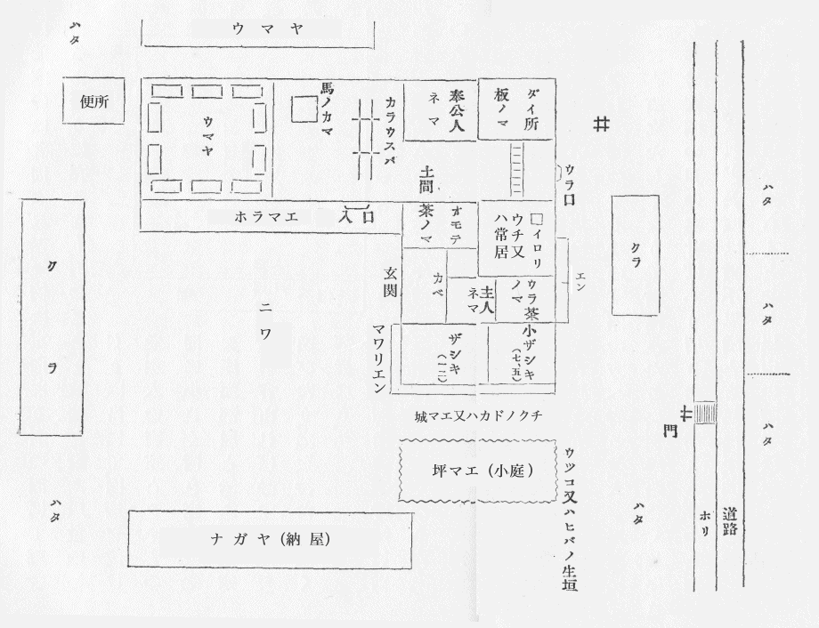
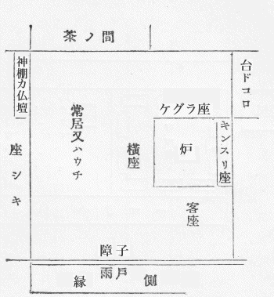
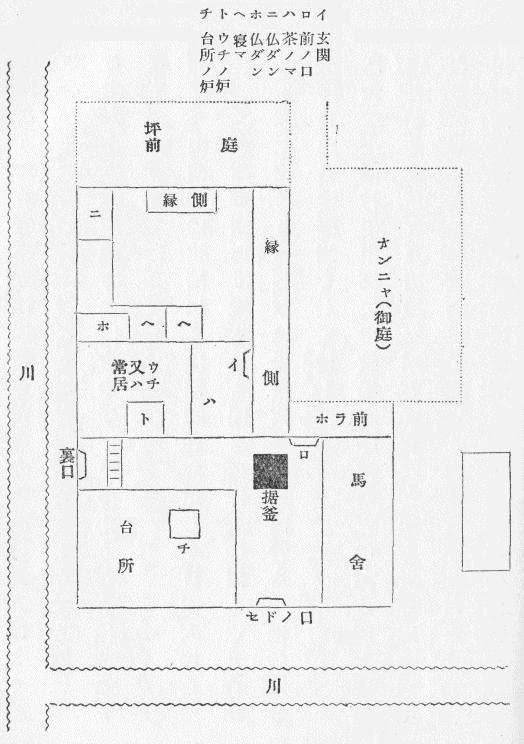
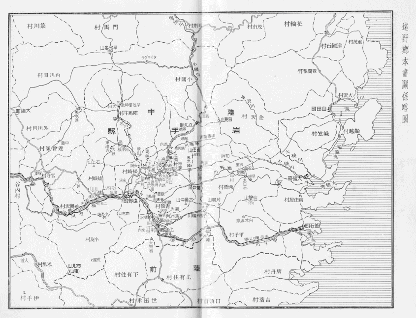

| 遠野物語 | |
| 柳田 国男 | |
| (2013) | |
遠野物語
柳田国男
この書を外国に在る人々に呈す
この話はすべて遠野
の人佐々木鏡石君より聞きたり。昨
明治四十二年の二月ごろより始めて夜分おりおり訪
ね来
たりこの話をせられしを筆記せしなり。鏡石君は話上手
にはあらざれども誠実なる人なり。自分もまた一字一句をも加減
せず感じたるままを書きたり。思うに遠野郷
にはこの類の物語なお数百件あるならん。我々はより多くを聞かんことを切望す。国内の山村にして遠野よりさらに物深き所にはまた無数の山神山人の伝説あるべし。願わくはこれを語りて平地人を戦慄せしめよ。この書のごときは陳勝呉広
のみ。
昨年八月の末自分は遠野郷に遊びたり。花巻
より十余里の路上には町場
三ヶ所あり。その他はただ青き山と原野なり。人煙の稀少
なること北海道石狩
の平野よりも甚
だし。或いは新道なるが故に民居の来たり就
ける者少なきか。遠野の城下はすなわち煙花の街なり。馬を駅亭の主人に借りて独
り郊外の村々を巡
りたり。その馬は黔
き海草をもって作りたる厚総
を掛
けたり。虻
多きためなり。猿
ヶ石
の渓谷は土肥
えてよく拓
けたり。路傍に石塔の多きこと諸国その比を知らず。高処より展望すれば早稲
まさに熟し晩稲
は花盛
りにて水はことごとく落ちて川にあり。稲の色合
いは種類によりてさまざまなり。三つ四つ五つの田を続けて稲の色の同じきはすなわち一家に属する田にしていわゆる名処
の同じきなるべし。小字
よりさらに小さき区域の地名は持主にあらざればこれを知らず。古き売買譲与の証文には常に見ゆる所なり。附馬牛
の谷へ越ゆれば早池峯
の山は淡く霞
み山の形は菅笠
のごとくまた片仮名
のへの字に似たり。この谷は稲熟することさらに遅く満目一色に青し。細き田中の道を行けば名を知らぬ鳥ありて雛
を連
れて横ぎりたり。雛の色は黒に白き羽まじりたり。始めは小さき鶏かと思いしが溝
の草に隠れて見えざればすなわち野鳥なることを知れり。天神の山には祭ありて獅子踊
あり。ここにのみは軽く塵
たち紅
き物いささかひらめきて一村の緑に映じたり。獅子踊というは鹿
の舞
なり。鹿の角
をつけたる面を被
り童子五六人剣を抜きてこれとともに舞うなり。笛の調子高く歌は低くして側
にあれども聞きがたし。日は傾きて風吹き酔いて人呼ぶ者の声も淋
しく女は笑い児
は走れどもなお旅愁をいかんともする能
わざりき。盂蘭盆
に新しき仏ある家は紅白の旗を高く揚
げて魂
を招く風
あり。峠
の馬上において東西を指点するにこの旗十数所あり。村人の永住の地を去らんとする者とかりそめに入りこみたる旅人とまたかの悠々
たる霊山とを黄昏
は徐
に来たりて包容し尽したり。遠野郷には八ヶ所の観音堂あり。一木をもって作りしなり。この日報賽
の徒多く岡の上に灯火見え伏鉦
の音聞えたり。道ちがえの叢
の中には雨風祭
の藁人形
あり。あたかもくたびれたる人のごとく仰臥
してありたり。以上は自分が遠野郷にてえたる印象なり。
思うにこの類の書物は少なくも現代の流行にあらず。いかに印刷が容易なればとてこんな本を出版し自己の狭隘
なる趣味をもって他人に強
いんとするは無作法
の仕業
なりという人あらん。されどあえて答う。かかる話を聞きかかる処
を見てきてのちこれを人に語りたがらざる者果
してありや。そのような沈黙にしてかつ慎
み深き人は少なくも自分の友人の中にはあることなし。いわんやわが九百年前の先輩
『今昔物語』のごときはその当時にありてすでに今は昔の話なりしに反しこれはこれ目前の出来事なり。たとえ敬虔
の意と誠実の態度とにおいてはあえて彼を凌
ぐことを得
という能わざらんも人の耳を経
ること多からず人の口と筆とを倩
いたること甚だ僅
なりし点においては彼の淡泊無邪気なる大納言殿
かえって来たり聴くに値せり。近代の御伽百物語
の徒に至りてはその志
やすでに陋
かつ決してその談の妄誕
にあらざることを誓いえず。窃
にもってこれと隣を比するを恥とせり。要するにこの書は現在の事実なり。単にこれのみをもってするも立派なる存在理由ありと信ず。ただ鏡石子は年わずかに二十四五自分もこれに十歳長ずるのみ。今の事業多き時代に生まれながら問題の大小をも弁
えず、その力を用いるところ当
を失えりという人あらば如何
。明神の山の木兎
のごとくあまりにその耳を尖
らしあまりにその眼を丸くし過ぎたりと責
むる人あらば如何。はて是非もなし。この責任のみは自分が負わねばならぬなり。
おきなさび飛ばず鳴かざるをちかたの森のふくろふ笑ふらんかも
柳田国男
（下の数字は話の番号なり、ページ数にはあらず）
地勢
一、五、六七、一一一
神の始
二、六九、七四
里の神
九八
カクラサマ
七二―七四
ゴンゲサマ
一一〇
家の神
一六
オクナイサマ
一四、一五、七〇
オシラサマ
六九
ザシキワラシ
一七、一八
山の神
八九、九一、九三、一〇二、一〇七、一〇八
神女
二七、五四
天狗
二九、六二、九〇
山男
五、六、七、九、二八、三〇、三一、九二
山女
三、四、三四、三五、七五
山の霊異
三二、三三、六一、九五
仙人堂
四九
蝦夷の跡
一一二
塚と森と
六六、一一一、一一三、一一四
姥 神
六五、七一
館 の址
六七、六八、七六
昔の人
八、一〇、一一、一二、二一、二六、八四
家のさま
八〇、八三
家の盛衰
一三、一八、一九、二四、二五、三八、六三
マヨイガ
六三、六四
前兆
二〇、五二、七八、九六
魂の行方
二二、八六―八八、九五、九七、九九、一〇〇
まぼろし
二三、七七、七九、八一、八二
雪女
一〇三
川童
五五―五九
猿の経立
四五、四六
猿
四七、四八
狼
三六―四二
熊
四三
狐
六〇、九四、一〇一
色々の鳥
五一―五三
花
三三、五〇
小正月の行事
一四、一〇二―一〇五
雨風祭
一〇九
昔々
一一五―一一八
歌謡
一一九
遠野郷
は今の陸中上閉伊
郡の西の半分、山々にて取り囲
まれたる平地なり。新町村
にては、遠野、土淵
、附馬牛
、松崎、青笹
、上郷
、小友
、綾織
、鱒沢
、宮守
、達曾部
の一町十ヶ村に分かつ。近代或いは西閉伊郡とも称し、中古にはまた遠野保
とも呼べり。今日郡役所のある遠野町はすなわち一郷の町場
にして、南部家
一万石の城下なり。城を横田城
ともいう。この地へ行くには花巻
の停車場にて汽車を下
り、北上川
を渡り、その川の支流猿
ヶ石川
の渓
を伝
いて、東の方へ入ること十三里、遠野の町に至る。山奥には珍しき繁華の地なり。伝えいう、遠野郷の地大昔はすべて一円の湖水なりしに、その水猿ヶ石川となりて人界に流れ出でしより、自然にかくのごとき邑落
をなせしなりと。されば谷川のこの猿ヶ石に落合うもの甚
だ多く、俗に七内八崎
ありと称す。内
は沢または谷のことにて、奥州の地名には多くあり。
○遠野郷のトー はもとアイヌ 語の湖という語より出でたるなるべし、ナイ もアイヌ 語なり。
遠野の町は南北の川の落合
にあり。以前は七七十里
とて、七つの渓谷おのおの七十里の奥より売買
の貨物を聚
め、その市
の日は馬千匹、人千人の賑
わしさなりき。四方の山々の中に最も秀
でたるを早池峯
という、北の方附馬牛
の奥にあり。東の方には六角牛
山立てり。石神
という山は附馬牛と達曾部
との間にありて、その高さ前の二つよりも劣
れり。大昔に女神あり、三人の娘を伴
ないてこの高原に来たり、今の来内
村の伊豆権現
の社あるところに宿
りし夜、今夜よき夢を見たらん娘によき山を与うべしと母の神の語りて寝たりしに、夜深く天より霊華
降
りて姉の姫
の胸の上に止りしを、末の姫眼覚
めて窃
にこれを取り、わが胸の上に載せたりしかば、ついに最も美しき早池峯の山を得、姉たちは六角牛と石神とを得たり。若き三人の女神おのおの三の山に住し今もこれを領したもう故
に、遠野の女どもはその妬
を畏
れて今もこの山には遊ばずといえり。
○この一里は小道すなわち坂東道 なり、一里が五丁または六丁なり。
○タッソベ もアイヌ 語なるべし。岩手郡玉山村にも同じ大字 あり。
○上郷村大字来内、ライナイ もアイヌ 語にてライ は死のことナイ は沢なり、水の静かなるよりの名か。
山々の奥には山人住めり。栃内
村和野
の佐々木嘉兵衛
という人は今も七十余にて生存せり。この翁
若かりしころ猟をして山奥に入りしに、遥
かなる岩の上に美しき女一人ありて、長き黒髪を梳
りていたり。顔の色きわめて白し。不敵の男なれば直
に銃
を差し向けて打ち放せしに弾
に応じて倒れたり。そこに馳
けつけて見れば、身のたけ高き女にて、解きたる黒髪はまたそのたけよりも長かりき。のちの験
にせばやと思いてその髪をいささか切り取り、これを綰
ねて懐
に入れ、やがて家路に向いしに、道の程にて耐
えがたく睡眠を催
しければ、しばらく物蔭
に立寄りてまどろみたり。その間夢
と現
との境のようなる時に、これも丈
の高き男一人近よりて懐中に手を差し入れ、かの綰ねたる黒髪を取り返し立ち去ると見ればたちまち睡
は覚めたり。山男なるべしといえり。
○土淵村大字栃内。
山口村の吉兵衛という家の主人、根子立
という山に入り、笹
を苅
りて束
となし担
ぎて立上らんとする時、笹原の上を風の吹き渡るに心づきて見れば、奥の方なる林の中より若き女の穉児
を負
いたるが笹原の上を歩みて此方へ来るなり。きわめてあでやかなる女にて、これも長き黒髪を垂れたり。児を結
いつけたる紐
は藤の蔓
にて、着
たる衣類は世の常の縞物
なれど、裾
のあたりぼろぼろに破れたるを、いろいろの木の葉などを添えて綴
りたり。足は地に着
くとも覚えず。事もなげに此方に近より、男のすぐ前を通りて何方
へか行き過ぎたり。この人はその折の怖
ろしさより煩
い始
めて、久しく病
みてありしが、近きころ亡
せたり。
○土淵村大字山口、吉兵衛は代々の通称なればこの主人もまた吉兵衛ならん。
遠野郷より海岸の田
ノ浜
、吉利吉里
などへ越ゆるには、昔より笛吹峠
という山路
あり。山口村より六角牛
の方へ入り路のりも近かりしかど、近年この峠を越ゆる者、山中にて必ず山男山女に出逢
うより、誰もみな怖
ろしがりて次第に往来も稀
になりしかば、ついに別の路を境木峠
という方に開き、和山
を馬次場
として今は此方ばかりを越ゆるようになれり。二里以上の迂路
なり。
○山口は六角牛に登る山口なれば村の名となれるなり。
遠野郷にては豪農のことを今でも長者という。青笹村大字糠前
の長者の娘、ふと物に取り隠されて年久しくなりしに、同じ村の何某という猟師
、或
る日山に入りて一人の女に遭
う。怖ろしくなりてこれを撃たんとせしに、何おじではないか、ぶつなという。驚きてよく見れば彼
の長者がまな娘なり。何故
にこんな処
にはおるぞと問えば、或る物に取られて今はその妻となれり。子もあまた生
みたれど、すべて夫
が食い尽
して一人此のごとくあり。おのれはこの地に一生涯を送ることなるべし。人にも言うな。御身も危うければ疾
く帰れというままに、その在所をも問い明
らめずして遁
げ還
れりという。
○糠の前は糠の森の前にある村なり、糠の森は諸国の糠塚と同じ。遠野郷にも糠森・糠塚多くあり。
上郷村の民家の娘、栗
を拾いに山に入りたるまま帰り来
たらず。家の者は死したるならんと思い、女のしたる枕
を形代
として葬式を執行
い、さて二三年を過ぎたり。しかるにその村の者猟をして五葉山
の腰のあたりに入りしに、大なる岩の蔽
いかかりて岩窟のようになれるところにて、図
らずこの女に逢いたり。互いに打ち驚き、いかにしてかかる山にはおるかと問えば、女の曰
く、山に入りて恐ろしき人にさらわれ、こんなところに来たるなり。遁
げて帰らんと思えど些
の隙
もなしとのことなり。その人はいかなる人かと問うに、自分には並
の人間と見ゆれど、ただ丈
きわめて高く眼の色少し凄
しと思わる。子供も幾人か生みたれど、我に似ざれば我子にはあらずといいて食
うにや殺すにや、みないずれへか持ち去りてしまうなりという。まことに我々と同じ人間かと押し返して問えば、衣類なども世の常なれど、ただ眼の色少しちがえり。一市間
に一度か二度、同じようなる人四五人集まりきて、何事か話をなし、やがて何方
へか出て行くなり。食物など外より持ち来たるを見れば町へも出ることならん。かく言ううちにも今にそこへ帰って来るかも知れずという故、猟師も怖ろしくなりて帰りたりといえり。二十年ばかりも以前のことかと思わる。
○一市間は遠野の町の市の日と次の市の日の間なり。月六度の市なれば一市間はすなわち五日のことなり。
黄昏
に女や子供の家の外に出ている者はよく神隠
しにあうことは他
の国々と同じ。松崎村の寒戸
というところの民家にて、若き娘梨
の樹
の下に草履
を脱
ぎ置きたるまま行方
を知らずなり、三十年あまり過ぎたりしに、或る日親類知音の人々その家に集
まりてありしところへ、きわめて老いさらぼいてその女帰り来たれり。いかにして帰って来たかと問えば人々に逢いたかりし故帰りしなり。さらばまた行かんとて、再び跡
を留
めず行き失
せたり。その日は風の烈
しく吹く日なりき。されば遠野郷の人は、今でも風の騒がしき日には、きょうはサムトの婆
が帰って来そうな日なりという。
菊池弥之助
という老人は若きころ駄賃
を業とせり。笛の名人にて夜通
しに馬を追いて行く時などは、よく笛を吹きながら行きたり。ある薄月夜
に、あまたの仲間の者とともに浜へ越ゆる境木峠を行くとて、また笛を取り出して吹きすさみつつ、大谷地
というところの上を過ぎたり。大谷地は深き谷にて白樺
の林しげく、その下は葦
など生じ湿
りたる沢なり。この時谷の底より何者か高き声にて面白いぞーと呼
ばわる者あり。一同ことごとく色を失い遁げ走りたりといえり。
○ヤチ はアイヌ 語にて湿地の義なり、内地に多くある地名なり。またヤツ ともヤト ともヤ ともいう。
この男ある奥山に入り、茸
を採るとて小屋を掛
け宿
りてありしに、深夜に遠きところにてきゃーという女の叫び声聞え胸を轟
かしたることあり。里へ帰りて見れば、その同じ夜、時も同じ刻限に、自分の妹なる女その息子
のために殺されてありき。
この女というは母一人子一人の家なりしに、嫁
と姑
との仲悪
しくなり、嫁はしばしば親里へ行きて帰り来ざることあり。その日は嫁は家にありて打ち臥
しておりしに、昼のころになり突然と倅
のいうには、ガガはとても生
かしては置かれぬ、今日
はきっと殺すべしとて、大なる草苅鎌
を取り出し、ごしごしと磨
ぎ始めたり。そのありさまさらに戯言
とも見えざれば、母はさまざまに事を分
けて詫
びたれども少しも聴かず。嫁も起き出
でて泣きながら諫
めたれど、露
従
う色もなく、やがて母が遁
れ出でんとする様子
あるを見て、前後の戸口をことごとく鎖
したり。便用に行きたしといえば、おのれみずから外より便器を持ち来たりてこれへせよという。夕方にもなりしかば母もついにあきらめて、大なる囲炉裡
の側
にうずくまりただ泣きていたり。倅
はよくよく磨
ぎたる大鎌を手にして近より来たり、まず左の肩口を目がけて薙
ぐようにすれば、鎌の刃先
炉
の上
の火棚
に引
っかかりてよく斬
れず。その時に母は深山の奥にて弥之助が聞きつけしようなる叫び声を立てたり。二度目には右の肩より切
り下
げたるが、これにてもなお死絶
えずしてあるところへ、里人
ら驚きて馳
せつけ倅を取
り抑
え直に警察官を呼
びて渡
したり。警官がまだ棒を持ちてある時代のことなり。母親は男が捕
えられ引き立てられて行くを見て、滝のように血の流るる中より、おのれは恨
も抱
かずに死ぬるなれば、孫四郎は宥
したまわれという。これを聞きて心を動
かさぬ者はなかりき。孫四郎は途中にてもその鎌を振り上げて巡査を追い廻しなどせしが、狂人なりとて放免せられて家に帰り、今も生きて里にあり。
○ガガ は方言にて母ということなり。
土淵村山口に新田乙蔵
という老人あり。村の人は乙爺
という。今は九十に近く病
みてまさに死
なんとす。年頃
遠野郷の昔の話をよく知りて、誰かに話して聞かせ置きたしと口癖
のようにいえど、あまり臭
ければ立ち寄りて聞かんとする人なし。処々
の館
の主
の伝記、家々
の盛衰、昔よりこの郷
に行
われし歌の数々を始めとして、深山の伝説またはその奥に住める人々の物語など、この老人最もよく知れり。
○惜 むべし、乙爺は明治四十二年の夏の始めになくなりたり。
この老人は数十年の間山の中に独
りにて住みし人なり。よき家柄
なれど、若きころ財産を傾け失いてより、世の中に思いを絶
ち、峠の上に小屋
を掛け、甘酒
を往来
の人に売りて活計とす。駄賃
の徒
はこの翁を父親
のように思いて、親
しみたり。少しく収入の余
あれば、町に下
りきて酒を飲む。赤毛布
にて作りたる半纏
を着て、赤き頭巾
を被
り、酔えば、町の中を躍
りて帰るに巡査もとがめず。いよいよ老衰して後、旧里
に帰りあわれなる暮
しをなせり。子供はすべて北海道へ行き、翁ただ一人なり。
部落
には必ず一戸の旧家ありて、オクナイサマという神を祀
る。その家をば大同
という。この神の像
は桑
の木を削
りて顔
を描
き、四角なる布
の真中
に穴を明
け、これを上
より通
して衣裳
とす。正月の十五日には小字中
の人々この家に集まり来
たりてこれを祭る。またオシラサマという神あり。この神の像もまた同じようにして造り設
け、これも正月の十五日に里人
集まりてこれを祭る。その式には白粉
を神像の顔に塗ることあり。大同の家には必ず畳
一帖
の室
あり。この部屋
にて夜
寝
る者はいつも不思議に遭
う。枕
を反
すなどは常のことなり。或いは誰かに抱
き起
こされ、または室より突
き出
さるることもあり。およそ静かに眠ることを許さぬなり。
○オシラサマ は双神なり。アイヌ の中にもこの神あること『蝦夷 風俗彙聞 』に見ゆ。
○羽後苅和野の町にて市の神の神体なる陰陽の神に正月十五日白粉を塗りて祭ることあり。これと似たる例なり。
オクナイサマを祭れば幸
多し。土淵村大字柏崎
の長者阿部氏、村にては田圃
の家
という。この家にて或る年田植
の人手
足
らず、明日
は空
も怪
しきに、わずかばかりの田を植え残すことかなどつぶやきてありしに、ふと何方
よりともなく丈
低
き小僧
一人来たりて、おのれも手伝い申さんというに任
せて働
かせて置きしに、午飯時
に飯
を食わせんとて尋
ねたれど見えず。やがて再び帰りきて終日、代
を搔
きよく働
きてくれしかば、その日に植えはてたり。どこの人かは知らぬが、晩にはきて物を食
いたまえと誘
いしが、日暮れてまたその影
見えず。家に帰りて見れば、縁側
に小さき泥
の足跡
あまたありて、だんだんに座敷に入り、オクナイサマの神棚
のところに止
りてありしかば、さてはと思いてその扉
を開き見れば、神像の腰より下は田の泥
にまみれていませし由
。
コンセサマを祭れる家も少なからず。この神の神体はオコマサマとよく似たり。オコマサマの社は里に多くあり。石または木にて男の物を作りて捧
ぐるなり。今はおいおいとその事少なくなれり。
旧家
にはザシキワラシという神の住みたもう家少なからず。この神は多くは十二三ばかりの童児なり。おりおり人に姿を見することあり。土淵村大字飯豊
の今淵
勘十郎という人の家にては、近きころ高等女学校にいる娘の休暇にて帰りてありしが、或る日廊下
にてはたとザシキワラシに行き逢
い大いに驚きしことあり。これは正
しく男の児
なりき。同じ村山口なる佐々木氏にては、母人ひとり縫物
しておりしに、次の間にて紙のがさがさという音あり。この室は家の主人の部屋
にて、その時は東京に行き不在の折なれば、怪しと思いて板戸を開き見るに何の影もなし。しばらくの間
坐
りて居ればやがてまた頻
に鼻を鳴
らす音あり。さては座敷
ワラシなりけりと思えり。この家にも座敷ワラシ住めりということ、久しき以前よりの沙汰
なりき。この神の宿
りたもう家は富貴自在なりということなり。
○ザシキワラシ は座敷童衆なり。この神のこと『石神 問答』中にも記事あり。
ザシキワラシまた女の児なることあり。同じ山口なる旧家にて山口孫左衛門という家には、童女の神二人いませりということを久しく言い伝えたりしが、或る年同じ村の何某という男、町より帰るとて留場
の橋のほとりにて見馴
れざる二人のよき娘に逢えり。物思わしき様子にて此方へ来
たる。お前たちはどこから来たと問えば、おら山口の孫左衛門がところからきたと答う。これから何処へ行くのかと聞けば、それの村の何某が家にと答う。その何某はやや離れたる村にて、今も立派に暮せる豪農なり。さては孫左衛門が世も末だなと思いしが、それより久しからずして、この家の主従二十幾人、茸
の毒に中
りて一日のうちに死に絶
え、七歳の女の子一人を残せしが、その女もまた年老いて子なく、近きころ病
みて失せたり。
孫左衛門が家にては、或る日梨
の木のめぐりに見馴
れぬ茸
のあまた生
えたるを、食わんか食うまじきかと男どもの評議してあるを聞きて、最後の代の孫左衛門、食わぬがよしと制したれども、下男の一人がいうには、いかなる茸にても水桶
の中に入れて苧殻
をもってよくかき廻
してのち食えば決して中
ることなしとて、一同この言に従い家内ことごとくこれを食いたり。七歳の女の児
はその日外に出
でて遊びに気を取られ、昼飯を食いに帰ることを忘れしために助かりたり。不意の主人の死去にて人々の動転してある間に、遠き近き親類の人々、或いは生前に貸
ありといい、或いは約束ありと称して、家の貨財は味噌
の類
までも取り去りしかば、この村草分
の長者なりしかども、一朝にして跡方
もなくなりたり。
この兇変の前にはいろいろの前兆ありき。男ども苅置
きたる秣
を出すとて三ツ歯の鍬
にて搔
きまわせしに、大なる蛇
を見出
したり。これも殺すなと主人が制せしをも聴かずして打ち殺したりしに、その跡より秣の下にいくらともなき蛇ありて、うごめき出でたるを、男ども面白半分にことごとくこれを殺したり。さて取り捨つべきところもなければ、屋敷の外
に穴を掘りてこれを埋
め、蛇塚を作る。その蛇は簣
に何荷
ともなくありたりといえり。
右の孫左衛門は村には珍しき学者にて、常に京都より和漢の書を取り寄せて読み耽
りたり。少し変人という方なりき。狐
と親しくなりて家を富ます術を得んと思い立ち、まず庭の中に稲荷
の祠
を建
て、自身京に上
りて正一位の神階を請
けて帰り、それよりは日々一枚の油揚
を欠かすことなく、手ずから社頭に供
えて拝をなせしに、のちには狐馴
れて近づけども遁
げず。手を延ばしてその首を抑
えなどしたりという。村にありし薬師の堂守
は、わが仏様は何ものをも供
えざれども、孫左衛門の神様よりは御利益
ありと、たびたび笑いごとにしたりとなり。
佐々木氏の曾祖母
年よりて死去せし時、棺
に取り納
め親族の者集まりきてその夜は一同座敷にて寝たり。死者の娘にて乱心のため離縁せられたる婦人もまたその中にありき。喪
の間は火の気
を絶
やすことを忌
むがところの風
なれば、祖母と母との二人のみは、大なる囲炉裡
の両側
に坐
り、母人
は旁
に炭籠
を置き、おりおり炭を継
ぎてありしに、ふと裏口の方より足音してくる者あるを見れば、亡
くなりし老女なり。平生
腰かがみて衣物
の裾
の引きずるを、三角に取り上げて前に縫いつけてありしが、まざまざとその通りにて、縞目
にも見覚
えあり。あなやと思う間もなく、二人の女の坐れる炉の脇を通り行くとて、裾にて炭取
にさわりしに、丸き炭取なればくるくるとまわりたり。母人は気丈
の人なれば振り返りあとを見送りたれば、親縁の人々の打ち臥
したる座敷の方へ近より行くと思うほどに、かの狂女のけたたましき声にて、おばあさんが来たと叫びたり。その余の人々はこの声に睡
を覚
しただ打ち驚くばかりなりしといえり。
○マーテルリンクの『侵入者』を想い起こさしむ。
同じ人の二七日の逮夜
に、知音の者集まりて、夜更
くるまで念仏を唱
え立ち帰らんとする時、門口
の石に腰掛けてあちらを向ける老女あり。そのうしろ付
正しく亡
くなりし人の通りなりき。これは数多
の人見たる故
に誰も疑わず。いかなる執着
のありしにや、ついに知る人はなかりしなり。
村々の旧家を大同
というは、大同元年に甲斐国
より移り来たる家なればかくいうとのことなり。大同は田村将軍征討の時代なり。甲斐は南部家の本国なり。二つの伝説を混じたるに非
ざるか。
○大同は大洞かも知れず、洞とは東北にて家門または族ということなり。『常陸国志 』に例あり、ホラマエ という語のちに見ゆ。
大同の祖先たちが、始めてこの地方に到着せしは、あたかも歳
の暮
にて、春のいそぎの門松
を、まだ片方
はえ立てぬうちに早
元日になりたればとて、今もこの家々にては吉例として門松の片方を地に伏せたるままにて、標縄
を引き渡すとのことなり。
柏崎の田圃
のうちと称する阿倍氏はことに聞えたる旧家なり。この家の先代に彫刻に巧
なる人ありて、遠野一郷の神仏の像にはこの人の作りたる者多し。
早池峯
より出でて東北の方宮古
の海に流れ入る川を閉伊川
という。その流域はすなわち下閉伊郡なり。遠野の町の中にて今は池
の端
という家の先代の主人、宮古に行きての帰るさ、この川の原台
の淵
というあたりを通りしに、若き女ありて一封の手紙を托
す。遠野の町の後なる物見山の中腹にある沼に行きて、手を叩
けば宛名
の人いで来
べしとなり。この人請
け合いはしたれども路々
心に掛りてとつおいつせしに、一人の六部
に行き逢
えり。この手紙を開きよみて曰
く、これを持ち行かば汝
の身に大なる災
あるべし。書き換
えて取らすべしとて更に別の手紙を与えたり。これを持ちて沼に行き教えのごとく手を叩きしに、果して若き女いでて手紙を受け取り、その礼なりとてきわめて小さき石臼
をくれたり。米を一粒入れて回
せば下より黄金出
づ。この宝物
の力にてその家やや富有になりしに、妻なる者慾深くして、一度にたくさんの米をつかみ入れしかば、石臼はしきりに自ら回りて、ついには朝ごとに主人がこの石臼に供えたりし水の、小さき窪
みの中に溜
りてありし中へ滑
り入りて見えずなりたり。その水溜りはのちに小さき池になりて、今も家の旁
にあり。家の名を池の端というもその為
なりという。
○この話に似たる物語西洋にもあり、偶合にや。
始めて早池峯に山路
をつけたるは、附馬牛村の何某という猟師にて、時は遠野の南部家入部
の後のことなり。その頃までは土地の者一人としてこの山には入りたる者なかりしと。この猟師半分ばかり道を開きて、山の半腹に仮小屋
を作りておりしころ、或
る日炉
の上に餅
をならべ焼きながら食いおりしに、小屋の外を通る者ありて頻
に中を窺
うさまなり。よく見れば大なる坊主なり。やがて小屋の中に入り来たり、さも珍しげに餅の焼くるを見てありしが、ついにこらえ兼
ねて手をさし延べて取りて食う。猟師も恐ろしければ自らもまた取りて与えしに、嬉
しげになお食いたり。餅皆
になりたれば帰りぬ。次の日もまた来るならんと思い、餅によく似たる白き石を二つ三つ、餅にまじえて炉の上に載せ置きしに、焼けて火のようになれり。案のごとくその坊主きょうもきて、餅を取りて食うこと昨日のごとし。餅尽
きてのちその白石をも同じように口に入れたりしが、大いに驚きて小屋を飛び出し姿見えずなれり。のちに谷底にてこの坊主の死してあるを見たりといえり。
○北上川の中古の大洪水に白髪水というがあり、白髪の姥 を欺 き餅に似たる焼石を食わせし祟 なりという。この話によく似たり。
鶏頭山
は早池峯の前面に立てる峻峯
なり。麓
の里にてはまた前薬師
ともいう。天狗
住めりとて、早池峯に登る者も決してこの山は掛
けず。山口のハネトという家の主人、佐々木氏の祖父と竹馬の友なり。きわめて無法者にて、鉞
にて草を苅
り鎌
にて土を掘るなど、若き時は乱暴の振舞
のみ多かりし人なり。或る時人と賭
をして一人にて前薬師に登りたり。帰りての物語に曰く、頂上に大なる岩あり、その岩の上に大男三人いたり。前にあまたの金銀をひろげたり。この男の近よるを見て、気色
ばみて振り返る、その眼の光きわめて恐ろし。早池峯に登りたるが途
に迷いて来たるなりと言えば、然
らば送りて遣
るべしとて先
に立ち、麓
近きところまで来たり、眼を塞
げと言うままに、暫時そこに立ちている間に、たちまち異人は見えずなりたりという。
小国
村の何某という男、或る日早池峯に竹を伐
りに行きしに、地竹
のおびただしく茂りたる中に、大なる男一人寝ていたるを見たり。地竹にて編みたる三尺ばかりの草履
を脱
ぎてあり。仰
に臥
して大なる鼾
をかきてありき。
○下閉伊郡小国村大字小国。
○地竹は深山に生ずる低き竹なり。
遠野郷の民家の子女にして、異人にさらわれて行く者年々多くあり。ことに女に多しとなり。
千晩
ヶ岳
は山中に沼
あり。この谷は物すごく腥
き臭
のするところにて、この山に入り帰りたる者はまことに少
なし。昔何の隼人
という猟師あり。その子孫今もあり。白き鹿を見てこれを追いこの谷に千晩こもりたれば山の名とす。その白鹿撃たれて遁げ、次の山まで行きて片肢
折れたり。その山を今片羽山
という。さてまた前なる山へきてついに死したり。その地を死助
という。死助権現
とて祀
れるはこの白鹿なりという。
○宛然 として古風土記をよむがごとし。
白望
の山に行きて泊
れば、深夜にあたりの薄明
るくなることあり。秋のころ茸
を採りに行き山中に宿する者、よくこの事に逢う。また谷のあなたにて大木を伐
り倒す音、歌の声など聞
ゆることあり。この山の大さは測
るべからず。五月に萱
を苅りに行くとき、遠く望めば桐
の花の咲き満
ちたる山あり。あたかも紫
の雲のたなびけるがごとし。されどもついにそのあたりに近づくこと能
わず。かつて茸を採りに入りし者あり。白望の山奥にて金の樋
と金の杓
とを見たり。持ち帰らんとするにきわめて重く、鎌
にて片端
を削
り取らんとしたれどそれもかなわず。また来
んと思いて樹の皮を白くし栞
としたりしが、次の日人々とともに行きてこれを求めたれど、ついにその木のありかをも見出しえずしてやみたり。
白望の山続きに離森
というところあり。その小字
に長者屋敷というは、全く無人の境なり。ここに行きて炭を焼く者ありき。或る夜その小屋の垂菰
をかかげて、内を窺
う者を見たり。髪を長く二つに分けて垂
れたる女なり。このあたりにても深夜に女の叫び声を聞くことは珍しからず。
佐々木氏の祖父の弟、白望に茸を採りに行きて宿
りし夜、谷を隔てたるあなたの大なる森林の前を横ぎりて、女の走り行くを見たり。中空を走るように思われたり。待てちゃアと二声ばかり呼
ばわりたるを聞けりとぞ。
猿の経立
、御犬
の経立は恐ろしきものなり。御犬
とは狼
のことなり。山口の村に近き二
ツ石山
は岩山なり。ある雨の日、小学校より帰る子どもこの山を見るに、処々
の岩の上に御犬うずくまりてあり。やがて首を下
より押
しあぐるようにしてかわるがわる吠
えたり。正面より見れば生
まれ立
ての馬の子ほどに見ゆ。後
から見れば存外
小さしといえり。御犬のうなる声ほど物凄
く恐ろしきものはなし。
境木峠
と和山峠
との間にて、昔は駄賃馬
を追
う者、しばしば狼に逢いたりき。馬方
らは夜行には、たいてい十人ばかりも群
をなし、その一人が牽
く馬は一端綱
とてたいてい五六七匹
までなれば、常に四五十匹の馬の数なり。ある時二三百ばかりの狼追い来たり、その足音山もどよむばかりなれば、あまりの恐ろしさに馬も人も一所に集まりて、そのめぐりに火を焼きてこれを防ぎたり。されどなおその火を躍り越えて入り来るにより、ついには馬の綱
を解
きこれを張
り回
らせしに、穽
などなりとや思いけん、それよりのちは中に飛び入らず。遠くより取
り囲
みて夜の明
るまで吠えてありきとぞ。
小友
村の旧家の主人にて今も生存せる某爺
という人、町より帰りに頻
に御犬の吠
ゆるを聞きて、酒に酔いたればおのれもまたその声をまねたりしに、狼も吠えながら跡
より来るようなり。恐ろしくなりて急ぎ家に帰り入り、門の戸を堅
く鎖
して打
ち潜
みたれども、夜通し狼の家をめぐりて吠ゆる声やまず。夜明
けて見れば、馬屋の土台
の下を掘り穿
ちて中に入り、馬の七頭ありしをことごとく食い殺していたり。この家はそのころより産やや傾きたりとのことなり。
佐々木君幼きころ、祖父と二人にて山より帰りしに、村に近き谷川の岸の上に、大なる鹿の倒れてあるを見たり。横腹は破れ、殺されて間
もなきにや、そこよりはまだ湯気
立てり。祖父の曰く、これは狼が食いたるなり。この皮ほしけれども御犬は必ずどこかこの近所に隠れて見ておるに相違なければ、取ることができぬといえり。
草の長さ三寸あれば狼は身を隠すといえり。草木
の色の移り行くにつれて、狼の毛の色も季節
ごとに変りて行くものなり。
和野の佐々木嘉兵衛、或る年境木越
の大谷地
へ狩にゆきたり。死助
の方より走れる原なり。秋の暮のことにて木の葉は散り尽し山もあらわなり。向
うの峯より何百とも知れぬ狼此方へ群
れて走りくるを見て恐ろしさに堪えず、樹の梢
に上
りてありしに、その樹の下を夥
しき足音して走り過ぎ北の方へ行けり。そのころより遠野郷には狼甚だ少なくなれりとのことなり。
六角牛
山の麓
にオバヤ、板小屋などいうところあり。広き萱山
なり。村々より苅
りに行く。ある年の秋飯豊村
の者ども萱を苅るとて、岩穴の中より狼の子三匹を見出し、その二つを殺し一つを持ち帰りしに、その日より狼の飯豊衆
の馬を襲
うことやまず。外
の村々の人馬にはいささかも害をなさず。飯豊衆相談して狼狩をなす。その中には相撲
を取り平生
力自慢
の者あり。さて野に出
でて見るに、雄
の狼は遠くにおりて来
たらず。雌
狼一つ鉄という男に飛びかかりたるを、ワッポロを脱ぎて腕
に巻き、やにわにその狼の口の中に突き込みしに、狼これを嚙
む。なお強く突き入れながら人を喚
ぶに、誰も誰も怖
れて近よらず。その間に鉄の腕は狼の腹まで入
り、狼は苦しまぎれに鉄の腕骨を嚙
み砕
きたり。狼はその場にて死したれども、鉄も担
がれて帰り程
なく死したり。
○ワッポロ は上羽織のことなり。
一昨年の『遠野新聞』にもこの記事を載せたり。上郷
村の熊という男、友人とともに雪の日に六角牛に狩に行き谷深く入りしに、熊の足跡を見出でたれば、手分
してその跡を覔
め、自分は峯の方を行きしに、とある岩の陰
より大なる熊此方を見る。矢頃
あまりに近かりしかば、銃をすてて熊に抱
えつき雪の上を転
びて、谷へ下る。連
の男これを救わんと思えども力及ばず。やがて谷川に落ち入りて、人の熊下
になり水に沈みたりしかば、その隙
に獣の熊を打ち取りぬ。水にも溺
れず、爪
の傷は数ヶ所受けたれども命に障
ることはなかりき。
六角牛の峯続きにて、橋野
という村の上なる山に金坑
あり。この鉱山のために炭を焼きて生計とする者、これも笛の上手
にて、ある日昼
の間
小屋
におり、仰向
に寝転
びて笛を吹きてありしに、小屋の口なる垂菰
をかかぐる者あり。驚きて見れば猿の経立
なり。恐ろしくて起き直りたれば、おもむろに彼方
へ走り行きぬ。
○上閉伊郡栗橋村大字橋野。
猿の経立
はよく人に似て、女色を好み里の婦人を盗み去ること多し。松脂
を毛に塗
り砂をその上につけておる故、毛皮
は鎧
のごとく鉄砲の弾
も通
らず。
栃内村の林崎
に住む何某という男、今は五十に近し。十年あまり前のことなり。六角牛山に鹿を撃ちに行き、オキを吹きたりしに、猿の経立あり、これを真
の鹿なりと思いしか、地竹
を手にて分
けながら、大なる口をあけ嶺の方より下
り来たれり。胆潰
れて笛を吹きやめたれば、やがて反
れて谷の方へ走り行きたり。
○オキ とは鹿笛のことなり。
この地方にて子供をおどす言葉
に、六角牛の猿の経立が来るぞということ常の事なり。この山には猿多し。緒挊
の滝
を見に行けば、崖
の樹の梢
にあまたおり、人を見れば遁
げながら木の実
などを擲
ちて行くなり。
仙人峠
にもあまた猿おりて行人に戯
れ石を打ちつけなどす。
仙人峠は登り十五里降
り十五里あり。その中ほどに仙人の像を祀りたる堂あり。この堂の壁
には旅人がこの山中にて遭いたる不思議の出来事を書き識
すこと昔よりの習
なり。例えば、我は越後の者なるが、何月何日の夜、この山路
にて若き女の髪を垂
れたるに逢えり。こちらを見てにこと笑いたりという類
なり。またこの所にて猿に悪戯
をせられたりとか、三人の盗賊に逢えりというようなる事をも記
せり。
○この一里も小道なり。
死助
の山にカッコ花あり。遠野郷にても珍しという花なり。五月閑古鳥
の啼
くころ、女や子どもこれを採
りに山へ行く。酢
の中に漬
けて置けば紫色
になる。酸漿
の実
のように吹きて遊ぶなり。この花を採ることは若き者の最も大なる遊楽なり。
山にはさまざまの鳥住
めど、最も寂
しき声の鳥はオット鳥なり。夏の夜中
に啼
く。浜の大槌
より駄賃附
の者など峠を越え来たれば、遥
に谷底にてその声を聞くといえり。昔ある長者の娘あり。またある長者の男の子と親
しみ、山に行きて遊びしに、男見えずなりたり。夕暮になり夜になるまで探
しあるきしが、これを見つくることをえずして、ついにこの鳥になりたりという。オットーン、オットーンというは夫
のことなり。末の方かすれてあわれなる鳴声
なり。
馬追鳥
は時鳥
に似て少
し大きく、羽
の色は赤に茶を帯
び、肩には馬の綱
のようなる縞
あり。胸のあたりにクツゴコ（口籠）のようなるかたあり。これも或
る長者が家の奉公人、山へ馬を放
しに行き、家に帰らんとするに一匹不足せり。夜通しこれを求めあるきしがついにこの鳥となる。アーホー、アーホーと啼くはこの地方にて野におる馬を追う声なり。年により馬追鳥里
にきて啼くことあるは飢饉
の前兆なり。深山には常に住みて啼く声を聞くなり。
○クツゴコ は馬の口に嵌 める網の袋なり。
郭公
と時鳥
とは昔ありし姉妹
なり。郭公は姉なるがある時芋
を掘りて焼き、そのまわりの堅
きところを自ら食い、中の軟
かなるところを妹に与えたりしを、妹は姉の食う分
は一層旨
かるべしと想いて、庖丁
にてその姉を殺せしに、たちまちに鳥となり、ガンコ、ガンコと啼きて飛び去りぬ。ガンコは方言にて堅いところということなり。妹さてはよきところをのみおのれにくれしなりけりと思い、悔恨に堪えず、やがてまたこれも鳥になりて庖丁かけたと啼きたりという。遠野にては時鳥のことを庖丁かけと呼ぶ。盛岡
辺にては時鳥はどちゃへ飛んでたと啼くという。
○この芋は馬鈴薯 のことなり。
閉伊川
の流
れには淵
多く恐ろしき伝説少なからず。小国川との落合に近きところに、川井
という村あり。その村の長者の奉公人、ある淵の上なる山にて樹を伐るとて、斧
を水中に取
り落
したり。主人の物なれば淵に入りてこれを探
りしに、水の底に入るままに物音聞ゆ。これを求めて行くに岩の陰に家あり。奥の方に美しき娘機
を織りていたり。そのハタシに彼の斧は立てかけてありたり。これを返したまわらんという時、振り返りたる女の顔を見れば、二三年前に身まかりたる我が主人の娘なり。斧は返すべければ我がこの所
にあることを人にいうな。その礼としてはその方身上
良
くなり、奉公をせずともすむようにして遣
らんといいたり。そのためなるか否かは知らず、その後胴引
などいう博奕
に不思議に勝ち続
けて金溜
り、ほどなく奉公をやめ家に引き込みて中
ぐらいの農民になりたれど、この男は疾
くに物忘れして、この娘のいいしことも心づかずしてありしに、或る日同じ淵の辺
を過
ぎて町へ行くとて、ふと前の事を思い出し、伴
なえる者に以前かかることありきと語りしかば、やがてその噂
は近郷に伝わりぬ。その頃より男は家産再び傾
き、また昔の主人に奉公して年を経たり。家の主人は何と思いしにや、その淵に何荷
ともなく熱湯を注
ぎ入れなどしたりしが、何の効もなかりしとのことなり。
○下閉伊郡川井村大字川井、川井はもちろん川合の義なるべし。
川には川童
多く住めり。猿ヶ石川ことに多し。松崎村の川端
の家
にて、二代まで続けて川童の子を孕
みたる者あり。生れし子は斬
り刻
みて一升樽
に入れ、土中に埋
めたり。その形
きわめて醜怪なるものなりき。女の婿
の里は新張
村の何某とて、これも川端の家なり。その主人人
にその始終
を語れり。かの家の者一同ある日畠
に行きて夕方に帰らんとするに、女川の汀
に踞
りてにこにこと笑いてあり。次の日は昼
の休みにまたこの事あり。かくすること日を重ねたりしに、次第にその女のところへ村の何某という者夜々
通
うという噂
立ちたり。始めには婿が浜の方へ駄賃附
に行きたる留守
をのみ窺
いたりしが、のちには婿
と寝
たる夜
さえくるようになれり。川童なるべしという評判だんだん高くなりたれば、一族の者集まりてこれを守れどもなんの甲斐
もなく、婿の母も行きて娘の側
に寝
たりしに、深夜にその娘の笑う声を聞きて、さては来てありと知りながら身動きもかなわず、人々いかにともすべきようなかりき。その産はきわめて難産なりしが、或る者のいうには、馬槽
に水をたたえその中にて産
まば安く産まるべしとのことにて、これを試みたれば果してその通りなりき。その子は手に水搔
あり。この娘の母もまたかつて川童の子を産みしことありという。二代や三代の因縁にはあらずという者もあり。この家も如法
の豪家にて何の某という士族なり。村会議員をしたることもあり。
上郷村の何某の家にても川童らしき物の子を産
みたることあり。確
なる証とてはなけれど、身内
真赤
にして口大きく、まことにいやな子なりき。忌
わしければ棄
てんとてこれを携えて道ちがえに持ち行き、そこに置きて一間ばかりも離れたりしが、ふと思い直し、惜しきものなり、売りて見せ物にせば金になるべきにとて立ち帰りたるに、早取り隠されて見えざりきという。
○道ちがえは道の二つに別かるるところすなわち追分 なり。
川の岸の砂
の上には川童の足跡
というものを見ること決して珍しからず。雨の日の翌日などはことにこの事あり。猿の足と同じく親指
は離れて人間の手の跡
に似たり。長さは三寸に足らず。指先のあとは人ののように明らかには見えずという。
小烏瀬川
の姥子淵
の辺に、新屋
の家
という家
あり。ある日淵
へ馬を冷
しに行き、馬曳
の子は外
へ遊びに行きし間に、川童出でてその馬を引き込まんとし、かえりて馬に引きずられて厩
の前に来たり、馬槽
に覆
われてありき。家のもの馬槽の伏せてあるを怪しみて少しあけて見れば川童の手出でたり。村中のもの集まりて殺さんか宥
さんかと評議せしが、結局今後
は村中の馬に悪戯
をせぬという堅き約束をさせてこれを放したり。その川童今は村を去りて相沢
の滝の淵に住めりという。
○この話などは類型全国に充満せり。いやしくも川童のおるという国には必ずこの話あり。何の故にか。
外
の地にては川童の顔は青しというようなれど、遠野の川童は面
の色
赭
きなり。佐々木氏の曾祖母
、穉
かりしころ友だちと庭にて遊びてありしに、三本ばかりある胡桃
の木の間より、真赤
なる顔したる男の子の顔見えたり。これは川童なりしとなり。今もその胡桃大木にてあり。この家の屋敷のめぐりはすべて胡桃の樹なり。
和野
村の嘉兵衛爺
、雉子小屋
に入りて雉子を待ちしに狐
しばしば出でて雉子を追う。あまり憎
ければこれを撃たんと思い狙
いたるに、狐は此方を向きて何ともなげなる顔してあり。さて引金
を引きたれども火移
らず。胸騒
ぎして銃を検せしに、筒口
より手元
のところまでいつのまにかことごとく土をつめてありたり。
同じ人六角牛に入りて白き鹿
に逢
えり。白鹿
は神
なりという言
い伝
えあれば、もし傷
つけて殺すこと能
わずば、必ず祟
あるべしと思案
せしが、名誉
の猟人
なれば世間
の嘲
りをいとい、思い切りてこれを撃
つに、手応
えはあれども鹿少しも動かず。この時もいたく胸騒
ぎして、平生
魔除
けとして危急
の時のために用意したる黄金
の丸
を取り出し、これに蓬
を巻きつけて打ち放したれど、鹿はなお動かず、あまり怪しければ近よりて見るに、よく鹿の形に似たる白き石なりき。数十年の間山中に暮
せる者が、石と鹿とを見誤
るべくもあらず、全く魔障
の仕業
なりけりと、この時ばかりは猟を止
めばやと思いたりきという。
また同じ人、ある夜
山中
にて小屋
を作るいとまなくて、とある大木の下に寄り、魔除
けのサンズ縄
をおのれと木のめぐりに三囲
引きめぐらし、鉄砲を竪
に抱
えてまどろみたりしに、夜深く物音のするに心づけば、大なる僧形
の者赤き衣
を羽
のように羽ばたきして、その木の梢に蔽
いかかりたり。すわやと銃を打ち放せばやがてまた羽ばたきして中空
を飛びかえりたり。この時の恐ろしさも世の常ならず。前後三たびまでかかる不思議に遭
い、そのたびごとに鉄砲を止
めんと心に誓い、氏神
に願掛
けなどすれど、やがて再び思い返して、年取るまで猟人
の業を棄
つること能
わずとよく人に語りたり。
小国
の三浦某というは村一の金持
なり。今より二三代前の主人、まだ家は貧しくして、妻は少しく魯鈍
なりき。この妻ある日門
の前
を流るる小さき川に沿いて蕗
を採
りに入りしに、よき物少なければ次第に谷奥深く登りたり。さてふと見れば立派なる黒き門
の家あり。訝
しけれど門の中に入りて見るに、大なる庭にて紅白の花一面に咲き鶏
多く遊べり。その庭を裏
の方へ廻
れば、牛小屋ありて牛多くおり、馬舎
ありて馬多くおれども、一向に人はおらず。ついに玄関より上
りたるに、その次の間には朱と黒との膳椀
をあまた取り出したり。奥の座敷には火鉢
ありて鉄瓶
の湯のたぎれるを見たり。されどもついに人影はなければ、もしや山男の家ではないかと急に恐ろしくなり、駆
け出
して家に帰りたり。この事を人に語れども実
と思う者もなかりしが、また或る日わが家のカドに出でて物を洗いてありしに、川上より赤き椀一つ流れてきたり。あまり美しければ拾い上げたれど、これを食器に用いたらば汚
しと人に叱
られんかと思い、ケセネギツの中に置きてケセネを量
る器
となしたり。しかるにこの器にて量り始めてより、いつまで経
ちてもケセネ尽きず。家の者もこれを怪しみて女に問いたるとき、始めて川より拾い上げし由
をば語りぬ。この家はこれより幸運に向い、ついに今の三浦家となれり。遠野にては山中の不思議
なる家をマヨイガという。マヨイガに行き当りたる者は、必ずその家の内の什器
家畜何にてもあれ持ち出でて来べきものなり。その人に授
けんがためにかかる家をば見するなり。女が無慾にて何ものをも盗み来ざりしが故に、この椀自ら流れて来たりしなるべしといえり。
○このカド は門にはあらず。川戸にて門前を流るる川の岸に水を汲 み物を洗うため家ごとに設けたるところなり。
○ケセネ は米稗 その他の穀物 をいう。キツ はその穀物を容 るる箱なり。大小種々のキツ あり。
金沢村
は白望
の麓
、上閉伊郡の内にてもことに山奥にて、人の往来する者少なし。六七年前この村より栃内村の山崎なる某
かかが家に娘の婿を取りたり。この婿実家に行かんとして山路に迷い、またこのマヨイガに行き当りぬ。家のありさま、牛馬雞の多きこと、花の紅白に咲きたりしことなど、すべて前の話の通りなり。同じく玄関に入りしに、膳椀を取り出したる室あり。座敷に鉄瓶
の湯たぎりて、今まさに茶を煮
んとするところのように見え、どこか便所などのあたりに人が立ちてあるようにも思われたり。茫然
として後にはだんだん恐ろしくなり、引き返してついに小国
の村里に出でたり。小国にてはこの話を聞きて実
とする者もなかりしが、山崎の方にてはそはマヨイガなるべし、行きて膳椀の類を持ち来
たり長者にならんとて、婿殿
を先に立てて人あまたこれを求めに山の奥に入り、ここに門ありきというところに来たれども、眼にかかるものもなく空
しく帰り来たりぬ。その婿もついに金持になりたりということを聞かず。
○上閉伊郡金沢村。
早池峯
は御影石
の山なり。この山の小国に向
きたる側
に安倍ヶ城
という岩あり。険
しき崖
の中ほどにありて、人などはとても行きうべきところにあらず。ここには今でも安倍貞任
の母住めりと言い伝う。雨
の降
るべき夕方など、岩屋
の扉
を鎖
す音聞ゆという。小国、附馬牛
の人々は、安倍ヶ城の錠
の音がする、明日
は雨ならんなどいう。
同じ山の附馬牛よりの登り口にもまた安倍屋敷
という巌窟あり。とにかく早池峯は安倍貞任にゆかりある山なり。小国より登る山口にも八幡太郎
の家来
の討死
したるを埋めたりという塚三つばかりあり。
安倍貞任に関する伝説はこのほかにも多し。土淵村と昔は橋野
といいし栗橋村との境にて、山口よりは二三里も登りたる山中に、広く平
なる原あり。そのあたりの地名に貞任というところあり。沼ありて貞任が馬を冷
せしところなりという。貞任が陣屋
を構
えし址
とも言い伝う。景色
よきところにて東海岸よく見ゆ。
土淵村には安倍氏という家ありて貞任が末なりという。昔は栄えたる家なり。今も屋敷
の周囲には堀ありて水を通ず。刀剣馬具あまたあり。当主は安倍与右衛門
、今も村にては二三等の物持
ちにて、村会議員なり。安倍の子孫はこのほかにも多し。盛岡の安倍館
の附近にもあり。厨川
の柵
に近き家なり。土淵村の安倍家の四五町北、小烏瀬川
の河隈
に館
の址あり。八幡沢
の館
という。八幡太郎が陣屋というものこれなり。これより遠野の町への路
にはまた八幡山という山ありて、その山の八幡沢の館の方に向かえる峯にもまた一つの館址
あり。貞任が陣屋なりという。二つの館の間二十余町を隔つ。矢戦
をしたりという言い伝えありて、矢の根を多く掘り出せしことあり。この間に似田貝
という部落あり。戦の当時このあたりは蘆
しげりて土固
まらず、ユキユキと動揺せり。或る時八幡太郎ここを通りしに、敵味方
いずれの兵糧
にや、粥
を多く置きてあるを見て、これは煮
た粥かといいしより村の名となる。似田貝の村の外を流るる小川を鳴川
という。これを隔てて足洗川村
あり。鳴川にて義家
が足を洗いしより村の名となるという。
○ニタカイ はアイヌ 語のニタト すなわち湿地より出しなるべし。地形よく合えり。西の国々にてはニタ ともヌタ ともいう皆これなり。下閉伊郡小川村にも二田貝という字あり。
今の土淵村には大同
という家二軒あり。山口の大同は当主を大洞万之丞
という。この人の養母名はおひで、八十を超
えて今も達者なり。佐々木氏の祖母の姉なり。魔法に長じたり。まじないにて蛇を殺し、木に止
れる鳥を落しなどするを佐々木君はよく見せてもらいたり。昨年の旧暦正月十五日に、この老女の語りしには、昔あるところに貧しき百姓あり。妻はなくて美しき娘あり。また一匹の馬を養う。娘この馬を愛して夜
になれば厩舎
に行きて寝
ね、ついに馬と夫婦になれり。或る夜父はこの事を知りて、その次の日に娘には知らせず、馬を連
れ出して桑の木につり下げて殺したり。その夜娘は馬のおらぬより父に尋ねてこの事を知り、驚き悲しみて桑の木の下に行き、死したる馬の首に縋
りて泣きいたりしを、父はこれを悪
みて斧をもって後
より馬の首を切り落せしに、たちまち娘はその首に乗りたるまま天に昇
り去れり。オシラサマというはこの時より成りたる神なり。馬をつり下げたる桑の枝にてその神の像を作る。その像三つありき。本
にて作りしは山口の大同にあり。これを姉神とす。中にて作りしは山崎の在家権十郎
という人の家にあり。佐々木氏の伯母が縁づきたる家なるが、今は家絶えて神の行方
を知らず。末
にて作りし妹神の像は今
附馬牛村にありといえり。
同じ人の話に、オクナイサマはオシラサマのある家には必ず伴ないて在
す神なり。されどオシラサマはなくてオクナイサマのみある家もあり。また家によりて神の像も同じからず。山口の大同にあるオクナイサマは木像なり。山口の辷石
たにえという人の家なるは掛軸
なり。田圃
のうちにいませるはまた木像なり。飯豊
の大同にもオシラサマはなけれどオクナイサマのみはいませりという。
この話をしたる老女は熱心なる念仏者なれど、世の常の念仏者とは様
かわり、一種邪宗らしき信仰あり。信者に道を伝うることはあれども、互いに厳重なる秘密を守り、その作法
につきては親にも子にもいささかたりとも知らしめず。また寺とも僧とも少しも関係はなくて、在家
の者のみの集
まりなり。その人の数も多からず。辷石
たにえという婦人などは同じ仲間なり。阿弥陀仏
の斎日
には、夜中人の静まるを待ちて会合し、隠れたる室にて祈禱
す。魔法まじないを善
くする故に、郷党に対して一種の権威あり。
栃内
村の字琴畑
は深山の沢にあり。家の数は五軒ばかり、小烏瀬
川の支流の水上
なり。これより栃内の民居まで二里を隔
つ。琴畑の入口に塚あり。塚の上には木の座像
あり。およそ人の大きさにて、以前は堂の中にありしが、今は雨
ざらしなり。これをカクラサマという。村の子供これを玩物
にし、引き出して川へ投げ入れまた路上を引きずりなどする故に、今は鼻も口も見えぬようになれり。或
いは子供を叱
り戒めてこれを制止する者あれば、かえりて祟
を受け病むことありといえり。
○神体仏像子供と遊ぶを好みこれを制止するを怒りたもうことほかにも例多し。遠江小笠郡大池村東光寺の薬師仏（『掛川志』）、駿河安倍郡豊田村曲金の軍陣坊社の神（『新風土記』）、または信濃筑摩郡射手の弥陀堂 の木仏（『信濃奇勝録』）などこれなり。
カクラサマの木像は遠野郷のうちに数多
あり。栃内の字西内
にもあり。山口分の大洞
というところにもありしことを記憶する者あり。カクラサマは人のこれを信仰する者なし。粗末なる彫刻にて、衣裳頭
の飾
のありさまも不分明なり。
栃内のカクラサマは右の大小二つなり。土淵一村にては三つか四つあり。いずれのカクラサマも木の半身像にてなたの荒削
りの無恰好
なるものなり。されど人の顔なりということだけは分
かるなり。カクラサマとは以前は神々の旅をして休息したもうべき場所の名なりしが、その地に常
います神をかく唱
うることとなれり。
離森
の長者屋敷にはこの数年前まで燐寸
の軸木
の工場
ありたり。その小屋の戸口に夜
になれば女の伺い寄りて人を見てげたげたと笑う者ありて、淋しさに堪えざる故、ついに工場を大字山口に移したり。その後また同じ山中に枕木
伐出
しのために小屋をかけたる者ありしが、夕方になると人夫の者いずれへか迷い行き、帰りてのち茫然
としてあることしばしばなり。かかる人夫四五人もありてその後も絶えず何方
へか出でて行くことありき。この者どもが後に言うを聞けば、女がきて何処
へか連れだすなり。帰りてのちは二日も三日も物を覚えずといえり。
長者屋敷は昔時長者の住みたりし址
なりとて、そのあたりにも糠森
という山あり。長者の家の糠を捨てたるがなれるなりという。この山中には五
つ葉
のうつ木
ありて、その下に黄金を埋めてありとて、今もそのうつぎの有処
を求めあるく者稀々
にあり。この長者は昔の金山師なりしならんか、このあたりには鉄を吹きたる滓
あり。恩徳
の金山
もこれより山続きにて遠からず。
○諸国のヌカ 塚スクモ 塚には多くはこれと同じき長者伝説を伴なえり。また黄金埋蔵の伝説も諸国に限りなく多くあり。
山口の田尻
長三郎というは土淵村一番の物持
なり。当主なる老人の話に、この人四十あまりのころ、おひで老人の息子
亡
くなりて葬式の夜、人々念仏を終りおのおの帰り行きし跡
に、自分のみは話好
きなれば少しあとになりて立ち出でしに、軒の雨落
ちの石を枕にして仰臥
したる男あり。よく見れば見も知らぬ人にて死してあるようなり。月のある夜なればその光にて見るに、膝
を立て口を開きてあり。この人大胆者にて足にて揺
かして見たれど少しも身じろぎせず。道を妨
げて外
にせん方
もなければ、ついにこれを跨
ぎて家に帰りたり。次の朝行きて見ればもちろんその跡方
もなく、また誰も外
にこれを見たりという人はなかりしかど、その枕にしてありし石の形と在
りどころとは昨夜の見覚
えの通りなり。この人の曰く、手をかけて見たらばよかりしに、半
ば恐ろしければただ足にて触
れたるのみなりし故、さらに何もののわざとも思いつかずと。
同じ人の話に、家に奉公せし山口の長蔵なる者、今も七十余の老翁にて生存す。かつて夜遊びに出でて遅くかえり来たりしに、主人の家の門は大槌
往還に向いて立てるが、この門の前にて浜の方よりくる人に逢えり。雪合羽
を着たり。近づきて立ちとまる故、長蔵も怪しみてこれを見たるに、往還を隔てて向側なる畠地の方へすっと反
れて行きたり。かしこには垣根
ありしはずなるにと思いて、よく見れば垣根は正
しくあり。急に怖ろしくなりて家の内に飛び込み、主人にこの事を語りしが、のちになりて聞けば、これと同じ時刻に新張村
の何某という者、浜よりの帰り途
に馬より落ちて死したりとのことなり。
この長蔵の父をもまた長蔵という。代々田尻家の奉公人にて、その妻とともに仕えてありき。若きころ夜遊びに出で、まだ宵
のうちに帰り来たり、門
の口
より入りしに、洞前
に立てる人影あり。懐手
をして筒袖
の袖口を垂れ、顔は茫
としてよく見えず。妻は名をおつねといえり。おつねのところへ来たるヨバヒトではないかと思い、つかつかと近よりしに、奥の方へは遁
げずして、かえって右手の玄関の方へ寄る故、人を馬鹿にするなと腹立たしくなりて、なお進みたるに、懐手のまま後
ずさりして玄関の戸の三寸ばかり明きたるところより、すっと内に入
りたり。されど長蔵はなお不思議とも思わず、その戸の隙
に手を差し入れて中を探らんとせしに、中の障子
は正
しく閉
してあり。ここに始めて恐ろしくなり、少し引き下らんとして上を見れば、今の男玄関の雲壁
にひたとつきて我を見下すごとく、その首は低く垂
れてわが頭に触るるばかりにて、その眼の球は尺余も、抜け出でてあるように思われたりという。この時はただ恐ろしかりしのみにて何事の前兆にてもあらざりき。
○ヨバヒト は呼ばい人なるべし。女に思いを運ぶ人をかくいう。
○雲壁はなげしの外側の壁なり。

右の話をよく呑
みこむためには、田尻氏の家のさまを図にする必要あり。遠野一郷の家の建てかたはいずれもこれと大同小異なり。
門はこの家のは北向
きなれど、通例は東向きなり。右の図にて厩舎
のあるあたりにあるなり。門のことを城前
という。屋敷
のめぐりは畠にて、囲墻
を設けず。主人の寝室とウチとの間に小さく暗き室あり。これを座頭部屋
という。昔は家に宴会あれば必ず座頭を喚
びたり。これを待たせ置く部屋なり。
○この地方を旅行して最も心とまるは家の形の何 れもかぎの手なることなり。この家などそのよき例なり。
栃内の字野崎
に前川万吉という人あり。二三年前に三十余にて亡くなりたり。この人も死ぬる二三年前に夜遊びに出でて帰りしに、門
の口
より廻
り縁
に沿いてその角
まで来たるとき、六月の月夜のことなり、何心
なく雲壁
を見れば、ひたとこれにつきて寝たる男あり。色の蒼
ざめたる顔なりき。大いに驚きて病みたりしがこれも何の前兆にてもあらざりき。田尻氏の息子丸吉この人と懇親にてこれを聞きたり。

これは田尻丸吉という人が自ら遭
いたることなり。少年の頃ある夜常居
より立ちて便所に行かんとして茶の間に入りしに、座敷
との境に人立てり。幽
かに茫としてはあれど、衣類の縞
も眼鼻もよく見え、髪をば垂
れたり。恐ろしけれどそこへ手を延ばして探りしに、板戸にがたと突き当り、戸のさんにも触
りたり。されどわが手は見えずして、その上に影のように重
なりて人の形あり。その顔のところへ手を遣
ればまた手の上に顔見ゆ。常居
に帰りて人々に話し、行灯
を持ち行きて見たれば、すでに何ものもあらざりき。この人は近代的の人にて怜悧
なる人なり。また虚言をなす人にもあらず。
山口の大同、大洞万之丞
の家の建てざまは少しく外
の家とはかわれり。その図次のページに出す。玄関は巽
の方に向かえり。きわめて古き家なり。この家には出して見れば祟
ありとて開かざる古文書の葛籠
一つあり。

佐々木氏の祖父は七十ばかりにて三四年前に亡くなりし人なり。この人の青年のころといえば、嘉永
の頃なるべきか。海岸の地には西洋人あまた来住してありき。釜石
にも山田にも西洋館あり。船越
の半島の突端にも西洋人の住みしことあり。耶蘇
教は密々に行われ、遠野郷にてもこれを奉じて磔
になりたる者あり。浜に行きたる人の話に、異人はよく抱き合いては嘗
め合う者なりなどいうことを、今でも話にする老人あり。海岸地方には合
の子
なかなか多かりしということなり。
土淵村の柏崎
にては両親とも正
しく日本人にして白子
二人ある家あり。髪も肌も眼も西洋人の通りなり。今は二十六七ぐらいなるべし。家にて農業を営
む。語音も土地の人とは同じからず、声細くして鋭
し。
土淵村の中央にて役場小学校などのあるところを字本宿
という。此所に豆腐屋
を業とする政という者、今三十六七なるべし。この人の父大病にて死なんとするころ、この村と小烏瀬
川を隔てたる字下栃内
に普請
ありて、地固めの堂突
をなすところへ、夕方に政の父ひとり来たりて人々に挨拶
し、おれも堂突をなすべしとて暫時仲間に入りて仕事をなし、やや暗くなりて皆とともに帰りたり。あとにて人々あの人は大病のはずなるにと少し不思議に思いしが、後に聞けばその日亡くなりたりとのことなり。人々悔みに行き今日のことを語りしが、その時刻はあたかも病人が息を引き取らんとするころなりき。
人の名は忘れたれど、遠野の町の豪家にて、主人大煩
いして命の境に臨みしころ、ある日ふと菩提寺
に訪い来たれり。和尚
鄭重
にあしらい茶などすすめたり。世間話
をしてやがて帰らんとする様子に少々不審あれば、跡より小僧を見せに遣
りしに、門を出でて家の方に向い、町の角
を廻りて見えずなれり。その道にてこの人に逢いたる人まだほかにもあり。誰にもよく挨拶して常
の体
なりしが、この晩に死去してもちろんその時は外出などすべき様態
にてはあらざりしなり。後に寺にては茶は飲みたりや否やと茶椀を置きしところを改めしに、畳
の敷合
わせへ皆こぼしてありたり。
これも似たる話なり。土淵村大字土淵の常堅寺
は曹洞宗
にて、遠野郷十二ヶ寺の触頭
なり。或る日の夕方に村人何某という者、本宿
より来る路にて何某という老人にあえり。この老人はかねて大病をして居る者なれば、いつのまによくなりしやと問うに、二三日気分も宜
しければ、今日は寺へ話を聞きに行くなりとて、寺の門前にてまた言葉を掛け合いて別れたり。常堅寺にても和尚はこの老人が訪ね来たりし故
出迎え、茶を進めしばらく話をして帰る。これも小僧に見させたるに門の外
にて見えずなりしかば、驚きて和尚に語り、よく見ればまた茶は畳の間にこぼしてあり、老人はその日失
せたり。
山口より柏崎へ行くには愛宕山
の裾
を廻
るなり。田圃
に続ける松林にて、柏崎の人家見ゆる辺より雑木
の林となる。愛宕山の頂
には小さき祠
ありて、参詣
の路は林の中にあり。登口
に鳥居
立ち、二三十本の杉の古木あり。その旁
にはまた一つのがらんとしたる堂あり。堂の前には山神の字を刻みたる石塔を立つ。昔より山の神出づと言い伝うるところなり。和野
の何某という若者、柏崎に用事ありて夕方堂のあたりを通りしに、愛宕山の上より降
り来る丈
高き人あり。誰ならんと思い林の樹木越しにその人の顔のところを目がけて歩み寄りしに、道の角
にてはたと行き逢いぬ。先方は思い掛けざりしにや大いに驚きて此方を見たる顔は非常に赤く、眼は耀
きてかついかにも驚きたる顔なり。山の神なりと知りて後
をも見ずに柏崎の村に走りつきたり。
○遠野郷には山神塔多く立てり、そのところはかつて山神に逢いまたは山神の祟を受けたる場所にて神をなだむるために建てたる石なり。
松崎村に天狗森
という山あり。その麓なる桑畠
にて村の若者何某という者、働きていたりしに、頻
に睡
くなりたれば、しばらく畠の畔
に腰掛けて居眠
りせんとせしに、きわめて大なる男の顔は真赤
なるが出で来たれり。若者は気軽にて平生
相撲
などの好きなる男なれば、この見馴
れぬ大男が立ちはだかりて上より見下すようなるを面悪
く思い、思わず立ち上りてお前はどこから来たかと問うに、何の答えもせざれば、一つ突き飛ばしてやらんと思い、力自慢
のまま飛びかかり手を掛けたりと思うや否や、かえりて自分の方が飛ばされて気を失いたり。夕方に正気づきてみれば無論その大男はおらず。家に帰りてのち人にこの事を話したり。その秋のことなり。早池峯の腰へ村人大勢とともに馬を曳
きて萩
を苅りに行き、さて帰らんとするころになりてこの男のみ姿見えず。一同驚きて尋ねたれば、深き谷の奥にて手も足も一つ一つ抜き取られて死していたりという。今より二三十年前のことにて、この時の事をよく知れる老人今も存在せり。天狗森には天狗多くいるということは昔より人の知るところなり。
遠野の町に山々の事に明るき人あり。もとは南部男爵
家の鷹匠
なり。町の人綽名
して鳥御前
という。早池峯、六角牛の木や石や、すべてその形状と在処
とを知れり。年取りてのち茸採
りにとて一人の連
とともに出でたり。この連の男というは水練の名人にて、藁
と槌
とを持ちて水の中に入り、草鞋
を作りて出てくるという評判の人なり。さて遠野の町と猿ヶ石川を隔つる向山
という山より、綾織
村の続石
とて珍しき岩のある所の少し上の山に入り、両人別れ別れになり、鳥御前一人はまた少し山を登りしに、あたかも秋の空の日影、西の山の端
より四五間
ばかりなる時刻なり。ふと大なる岩の陰
に赭
き顔の男と女とが立ちて何か話をして居るに出逢
いたり。彼らは鳥御前の近づくを見て、手を拡
げて押し戻すようなる手つきをなし制止したれども、それにも構
わず行きたるに女は男の胸に縋
るようにしたり。事のさまより真の人間にてはあるまじと思いながら、鳥御前はひょうきんな人なれば戯
れて遣
らんとて腰なる切刃
を抜き、打ちかかるようにしたれば、その色赭き男は足を挙
げて蹴
りたるかと思いしが、たちまちに前後を知らず。連なる男はこれを探
しまわりて谷底に気絶してあるを見つけ、介抱して家に帰りたれば、鳥御前は今日の一部始終を話し、かかる事は今までに更になきことなり。おのれはこのために死ぬかも知れず、ほかの者には誰にもいうなと語り、三日ほどの間病みて身まかりたり。家の者あまりにその死にようの不思議なればとて、山臥
のケンコウ院というに相談せしに、その答えには、山の神たちの遊べるところを邪魔したる故、その祟
をうけて死したるなりといえり。この人は伊能先生なども知合
なりき。今より十余年前の事なり。
昨年のことなり。土淵村の里の子十四五人にて早池峯に遊びに行き、はからず夕方近くなりたれば、急ぎて山を下り麓
近くなるころ、丈
の高き男の下より急ぎ足に昇りくるに逢えり。色は黒く眼
はきらきらとして、肩には麻かと思わるる古き浅葱色
の風呂敷
にて小さき包を負いたり。恐ろしかりしかども子供の中の一人、どこへ行くかと此方より声を掛けたるに、小国
さ行くと答う。この路は小国へ越ゆべき方角にはあらざれば、立ちとまり不審するほどに、行き過ぐると思うまもなく、はや見えずなりたり。山男よと口々に言いてみなみな遁げ帰りたりといえり。
これは和野の人菊池菊蔵という者、妻は笛吹峠のあなたなる橋野より来たる者なり。この妻親里へ行きたる間に、糸蔵という五六歳の男の児
病気になりたれば、昼過
ぎより笛吹峠を越えて妻を連れに親里へ行きたり。名に負う六角牛の峯続きなれば山路は樹深く、ことに遠野分より栗橋分へ下らんとするあたりは、路はウドになりて両方は岨
なり。日影はこの岨に隠れてあたりやや薄暗くなりたるころ、後の方より菊蔵と呼ぶ者あるに振り返りて見れば、崖
の上より下を覗
くものあり。顔は赭く眼の光りかがやけること前の話のごとし。お前の子はもう死んで居るぞという。この言葉を聞きて恐ろしさよりも先にはっと思いたりしが、はやその姿は見えず。急ぎ夜の中に妻を伴
ないて帰りたれば、果して子は死してありき。四五年前のことなり。
○ウド とは両側高く切込みたる路のことなり。東海道の諸国にてウタウ 坂・謡坂などいうはすべてかくのごとき小さき切通しのことならん。
この菊蔵、柏崎なる姉の家に用ありて行き、振舞
われたる残りの餅
を懐
に入れて、愛宕山の麓
の林を過ぎしに、象坪
の藤七という大酒呑
にて彼と仲善
の友に行き逢えり。そこは林の中なれど少しく芝原
あるところなり。藤七はにこにことしてその芝原を指
し、ここで相撲
を取らぬかという。菊蔵これを諾し、二人草原にてしばらく遊びしが、この藤七いかにも弱く軽く自由に抱
えては投げらるる故
、面白きままに三番まで取りたり。藤七が曰く、今日はとてもかなわず、さあ行くべしとて別れたり。四五間
も行きてのち心づきたるにかの餅見えず。相撲場に戻りて探したれどなし。始めて狐ならんかと思いたれど、外聞を恥じて人にもいわざりしが、四五日ののち酒屋にて藤七に逢いその話をせしに、おれは相撲など取るものか、その日は浜へ行きてありしものをと言いて、いよいよ狐と相撲を取りしこと露顕したり。されど菊蔵はなお他の人々には包み隠してありしが、昨年の正月の休みに人々酒を飲み狐の話をせしとき、おれもじつはとこの話を白状し、大いに笑われたり。
○象坪は地名にしてかつ藤七の名字なり。象坪という地名のこと『石神問答 』の中にてこれを研究したり。
松崎の菊池某という今年四十三四の男、庭作りの上手
にて、山に入り草花を掘りてはわが庭に移し植え、形の面白き岩などは重きを厭
わず家に担
い帰るを常とせり。或る日少し気分重ければ家を出でて山に遊びしに、今までついに見たることなき美しき大岩を見つけたり。平生
の道楽なればこれを持ち帰らんと思い、持ち上げんとせしが非常に重し。あたかも人の立ちたる形して丈
もやがて人ほどあり。されどほしさのあまりこれを負い、我慢して十間ばかり歩みしが、気の遠くなるくらい重ければ怪しみをなし、路
の旁
にこれを立て少しくもたれかかるようにしたるに、そのまま石とともにすっと空中に昇
り行く心地
したり。雲より上になりたるように思いしがじつに明るく清きところにて、あたりにいろいろの花咲き、しかも何処
ともなく大勢の人声聞えたり。されど石はなおますます昇
り行き、ついには昇り切りたるか、何事も覚えぬようになりたり。その後時過ぎて心づきたる時は、やはり以前のごとく不思議の石にもたれたるままにてありき。この石を家の内へ持ち込みてはいかなることあらんも測
りがたしと、恐ろしくなりて遁げ帰りぬ。この石は今も同じところにあり。おりおりはこれを見て再びほしくなることありといえり。
遠野の町に芳公馬鹿
とて三十五六なる男、白痴にて一昨年まで生きてありき。この男の癖は路上にて木の切れ塵
などを拾い、これを捻
りてつくづくと見つめまたはこれを嗅
ぐことなり。人の家に行きては柱などをこすりてその手を嗅ぎ、何ものにても眼の先きまで取り上げ、にこにことしておりおりこれを嗅ぐなり。この男往来をあるきながら急に立ち留
り、石などを拾い上げてこれをあたりの人家に打ちつけ、けたたましく火事だ火事だと叫ぶことあり。かくすればその晩か次の日か物を投げつけられたる家火を発せざることなし。同じこと幾度となくあれば、のちにはその家々も注意して予防をなすといえども、ついに火事を免
れたる家は一軒もなしといえり。
飯豊
の菊池松之丞
という人傷寒
を病み、たびたび息を引きつめし時、自分は田圃に出でて菩提寺
なるキセイ院へ急ぎ行かんとす。足に少し力を入れたるに、図らず空中に飛び上り、およそ人の頭ほどのところを次第に前下
りに行き、また少し力を入るれば昇ること始めのごとし。何とも言われず快
し。寺の門に近づくに人群集せり。何故
ならんと訝
りつつ門を入れば、紅
の芥子
の花咲き満ち、見渡すかぎりも知らず。いよいよ心持よし。この花の間に亡
くなりし父立てり。お前もきたのかという。これに何か返事をしながらなお行くに、以前失いたる男の子おりて、トッチャお前もきたかという。お前はここにいたのかと言いつつ近よらんとすれば、今きてはいけないという。この時門の辺にて騒しくわが名を喚
ぶ者ありて、うるさきこと限りなけれど、よんどころなければ心も重くいやいやながら引き返したりと思えば正気づきたり。親族の者寄り集
い水など打ちそそぎて喚
び生
かしたるなり。
路の傍に山の神、田の神、塞
の神の名を彫りたる石を立つるは常のことなり。また早池峯山・六角牛山の名を刻したる石は、遠野郷にもあれど、それよりも浜にことに多し。
土淵村の助役北川清という人の家は字火石
にあり。代々の山臥
にて祖父は正福院といい、学者にて著作多く、村のために尽したる人なり。清の弟に福二という人は海岸の田の浜へ婿
に行きたるが、先年の大海嘯
に遭いて妻と子とを失い、生き残りたる二人の子とともに元
の屋敷の地に小屋を掛けて一年ばかりありき。夏の初めの月夜に便所に起き出でしが、遠く離れたるところにありて行く道も浪
の打つ渚
なり。霧の布
きたる夜なりしが、その霧の中より男女二人の者の近よるを見れば、女は正
しく亡くなりしわが妻なり。思わずその跡をつけて、遥々
と船越
村の方へ行く崎の洞
あるところまで追い行き、名を呼びたるに、振り返りてにこと笑いたり。男はとみればこれも同じ里の者にて海嘯の難に死せし者なり。自分が婿に入りし以前に互いに深く心を通わせたりと聞きし男なり。今はこの人と夫婦になりてありというに、子供は可愛
くはないのかといえば、女は少しく顔の色を変えて泣きたり。死したる人と物いうとは思われずして、悲しく情なくなりたれば足元
を見てありし間に、男女は再び足早にそこを立ち退
きて、小浦
へ行く道の山陰
を廻
り見えずなりたり。追いかけて見たりしがふと死したる者なりしと心づき、夜明けまで道中
に立ちて考え、朝になりて帰りたり。その後久しく煩
いたりといえり。
船越の漁夫何某。ある日仲間の者とともに吉利吉里
より帰るとて、夜深く四十八坂のあたりを通りしに、小川のあるところにて一人の女に逢う。見ればわが妻なり。されどもかかる夜中にひとりこの辺に来
べき道理なければ、必定
化物
ならんと思い定め、やにわに魚切庖丁
を持ちて後の方より差し通したれば、悲しき声を立てて死したり。しばらくの間は正体を現わさざれば流石
に心に懸り、後
の事を連
の者に頼み、おのれは馳せて家に帰りしに、妻は事もなく家に待ちてあり。今恐ろしき夢を見たり。あまり帰りの遅ければ夢に途中まで見に出でたるに、山路にて何とも知れぬ者に脅
かされて、命を取らるると思いて目覚めたりという。さてはと合点
して再び以前の場所へ引き返してみれば、山にて殺したりし女は連の者が見ておる中についに一匹の狐
となりたりといえり。夢の野山を行くにこの獣の身を傭
うことありと見ゆ。
旅人豊間根
村を過ぎ、夜更
け疲れたれば、知音
の者の家に灯火の見ゆるを幸
に、入りて休息せんとせしに、よき時に来合
せたり、今夕死人あり、留守
の者なくていかにせんかと思いしところなり、しばらくの間頼むといいて主人は人を喚
びに行きたり。迷惑千万
なる話なれど是非もなく、囲炉裡
の側にて煙草
を吸いてありしに、死人は老女にて奥の方に寝させたるが、ふと見れば床
の上にむくむくと起き直る。胆潰
れたれど心を鎮
め静かにあたりを見廻
すに、流し元
の水口の穴より狐のごとき物あり、面
をさし入れて頻
に死人の方を見つめていたり。さてこそと身を潜
め窃
かに家の外に出で、背戸
の方に廻りて見れば、正しく狐にて首を流し元の穴に入れ後足
を爪立
てていたり。有合
わせたる棒をもてこれを打ち殺したり。
○下閉伊郡豊間根村大字豊間根。
正月十五日の晩を小正月
という。宵
のほどは子供ら福の神と称して四五人群を作り、袋を持ちて人の家に行き、明
の方から福の神が舞い込んだと唱
えて餅を貰
う習慣あり。宵を過ぐればこの晩に限り人々決して戸の外に出づることなし。小正月の夜半過ぎは山の神出でて遊ぶと言
い伝えてあればなり。山口の字丸古立
におまさという今三十五六の女、まだ十二三の年のことなり。いかなるわけにてか唯一人にて福の神に出で、ところどころをあるきて遅くなり、淋
しき路を帰りしに、向うの方より丈
の高き男来てすれちがいたり。顔はすてきに赤く眼はかがやけり。袋を捨てて遁げ帰り大いに煩いたりといえり。
小正月の夜、または小正月ならずとも冬の満月の夜は、雪女が出でて遊ぶともいう。童子をあまた引き連れてくるといえり。里の子ども冬は近辺の丘に行き、橇遊
びをして面白さのあまり夜になることあり。十五日の夜に限り、雪女が出るから早く帰れと戒めらるるは常のことなり。されど雪女を見たりという者は少なし。
小正月の晩には行事甚
だ多し。月見
というは六つの胡桃
の実
を十二に割り一時
に炉
の火にくべて一時にこれを引き上げ、一列にして右より正月二月と数うるに、満月の夜晴なるべき月にはいつまでも赤く、曇るべき月には直
に黒くなり、風ある月にはフーフーと音をたてて火が振
うなり。何遍繰り返しても同じことなり。村中いずれの家にても同じ結果を得るは妙なり。翌日はこの事を語り合い、例えば八月の十五夜風とあらば、その歳
の稲の苅入
を急ぐなり。
○五穀の占、月の占多少のヴァリエテをもって諸国に行なわる。陰陽道 に出でしものならん。
また世中見
というは、同じく小正月の晩に、いろいろの米にて餅をこしらえて鏡となし、同種の米を膳
の上に平
らに敷き、鏡餅
をその上に伏せ、鍋
を被
せ置きて翌朝これを見るなり。餅につきたる米粒
の多きものその年は豊作なりとして、早中晩の種類を択び定むるなり。
海岸の山田にては蜃気楼
年々見ゆ。常に外国の景色なりという。見馴
れぬ都のさまにして、路上の車馬しげく人の往来眼ざましきばかりなり。年ごとに家の形などいささかも違うことなしといえり。
上郷村に河ぷちのうちという家あり。早瀬川の岸にあり。この家の若き娘、ある日河原に出でて石を拾いてありしに、見馴れぬ男来たり、木の葉とか何とかを娘にくれたり。丈
高く面朱
のようなる人なり。娘はこの日より占
の術を得たり。異人は山の神にて、山の神の子になりたるなりといえり。
山の神の乗り移りたりとて占をなす人は所々にあり。附馬牛
村にもあり。本業は木挽
なり。柏崎の孫太郎もこれなり。以前は発狂して喪心したりしに、ある日山に入りて山の神よりその術を得たりしのちは、不思議に人の心中を読むこと驚くばかりなり。その占いの法は世間の者とは全く異なり。何の書物をも見ず、頼みにきたる人と世間話をなし、その中にふと立ちて常居
の中
をあちこちとあるき出すと思うほどに、その人の顔は少しも見ずして心に浮びたることをいうなり。当らずということなし。例えばお前のウチの板敷
を取り離し、土を掘りて見よ。古き鏡または刀の折れあるべし。それを取り出さねば近き中に死人ありとか家が焼くるとかいうなり。帰りて掘りて見るに必ずあり。かかる例は指を屈するに勝
えず。
盆のころには雨風祭とて藁
にて人よりも大なる人形
を作り、道の岐
に送り行きて立つ。紙にて顔を描
き瓜
にて陰陽の形を作り添えなどす。虫祭の藁人形にはかかることはなくその形も小さし。雨風祭の折は一部落の中にて頭屋
を択
び定め、里人
集まりて酒を飲みてのち、一同笛太鼓
にてこれを道の辻まで送り行くなり。笛の中には桐
の木にて作りたるホラなどあり。これを高く吹く。さてその折の歌は「二百十日の雨風まつるよ、どちの方さ祭る、北の方さ祭る」という。
○『東国輿地 勝覧』によれば韓国にても厲壇 を必ず城の北方に作ること見ゆ。ともに玄武神の信仰より来たれるなるべし。
ゴンゲサマというは、神楽舞
の組ごとに一つずつ備われる木彫
の像にして、獅子頭
とよく似て少しく異
なれり。甚だ御利生
のあるものなり。新張
の八幡社の神楽組のゴンゲサマと、土淵村字五日市
の神楽組のゴンゲサマと、かつて途中にて争いをなせしことあり。新張のゴンゲサマ負けて片耳
を失いたりとて今もなし。毎年村々を舞いてあるく故、これを見知らぬ者なし。ゴンゲサマの霊験
はことに火伏
にあり。右の八幡の神楽組かつて附馬牛村に行きて日暮
れ宿を取り兼ねしに、ある貧しき者の家にて快
くこれを泊
めて、五升桝
を伏せてその上にゴンゲサマを座
え置き、人々は臥
したりしに、夜中にがつがつと物を嚙
む音のするに驚きて起きてみれば、軒端
に火の燃えつきてありしを、桝の上なるゴンゲサマ飛び上り飛び上りして火を喰
い消してありしなりと。子どもの頭を病む者など、よくゴンゲサマを頼み、その病を嚙みてもらうことあり。
山口、飯豊、附馬牛の字荒川東禅寺および火渡
、青笹の字中沢ならびに土淵村の字土淵に、ともにダンノハナという地名あり。その近傍にこれと相対して必ず蓮台野
という地あり。昔は六十を超えたる老人はすべてこの蓮台野へ追い遣るの習
ありき。老人はいたずらに死んで了
うこともならぬ故に、日中は里へ下り農作して口を糊
したり。そのために今も山口土淵辺にては朝
に野らに出づるをハカダチといい、夕方野らより帰ることをハカアガリというといえり。
○ダンノハナ は壇の塙なるべし。すなわち丘の上にて塚を築きたる場所ならん。境の神を祭るための塚なりと信ず。蓮台野もこの類なるべきこと『石神問答』中にいえり。
ダンノハナは昔館
のありし時代に囚人を斬
りし場所なるべしという。地形は山口のも土淵飯豊のもほぼ同様にて、村境の岡の上なり。仙台にもこの地名あり。山口のダンノハナは大洞
へ越ゆる丘の上にて館址
よりの続きなり。蓮台野はこれと山口の民居を隔てて相対す。蓮台野の四方はすべて沢なり。東はすなわちダンノハナとの間の低地、南の方を星谷という。此所には蝦夷屋敷
という四角に凹
みたるところ多くあり。その跡
きわめて明白なり。あまた石器を出す。石器土器の出るところ山口に二ヶ所あり。他の一は小字
をホウリョウという。ここの土器と蓮台野の土器とは様式全然殊
なり。後者のは技巧いささかもなく、ホウリョウのは模様
なども巧
なり。埴輪
もここより出づ。また石斧石刀の類も出づ。蓮台野には蝦夷銭
とて土にて銭の形をしたる径二寸ほどの物多く出づ。これには単純なる渦紋
などの模様あり。字ホウリョウには丸玉・管玉
も出づ。ここの石器は精巧にて石の質も一致したるに、蓮台野のは原料いろいろなり。ホウリョウの方は何の跡ということもなく、狭き一町歩
ほどの場所なり。星谷は底の方
今は田となれり。蝦夷屋敷はこの両側に連なりてありしなりという。このあたりに掘れば祟
ありという場所二ヶ所ほどあり。
○外 の村々にても二所の地形および関係これに似たりという。
○星谷という地名も諸国にあり星を祭りしところなり。
○ホウリョウ 権現は遠野をはじめ奥羽一円に祀らるる神なり。蛇の神なりという。名義を知らず。
和野にジョウヅカ森というところあり。象を埋めし場所なりといえり。此所だけには地震なしとて、近辺にては地震の折はジョウヅカ森へ遁げよと昔より言い伝えたり。これは確かに人を埋めたる墓なり。塚のめぐりには堀あり。塚の上には石あり。これを掘れば祟
ありという。
○ジョウズカ は定塚、庄塚または塩塚などとかきて諸国にあまたあり。これも境の神を祀りしところにて地獄のショウツカ の奪衣婆 の話などと関係あること『石神問答』に詳 にせり。また象坪などの象頭神とも関係あれば象の伝説は由 なきにあらず、塚を森ということも東国の風なり。
山口のダンノハナは今は共同墓地なり。岡の頂上にうつ木を栽
えめぐらしその口は東方に向かいて門口
めきたるところあり。その中ほどに大なる青石あり。かつて一たびその下を掘りたる者ありしが、何ものをも発見せず。のち再びこれを試みし者は大なる瓶
あるを見たり。村の老人たち大いに叱
りければ、またもとのままになし置きたり。館
の主の墓なるべしという。此所に近き館の名はボンシャサの館という。いくつかの山を掘り割りて水を引き、三重四重に堀を取り廻
らせり。寺屋敷・砥石森
などいう地名あり。井の跡とて石垣
残れり。山口孫左衛門の祖先ここに住めりという。『遠野古事記
』に詳
かなり。
御伽話
のことを昔々
という。ヤマハハの話最も多くあり。ヤマハハは山姥
のことなるべし。その一つ二つを次に記すべし。
昔々あるところにトトとガガとあり。娘を一人持てり。娘を置きて町へ行くとて、誰がきても戸を明けるなと戒しめ、鍵
を掛けて出でたり。娘は恐ろしければ一人炉にあたりすくみていたりしに、真昼間
に戸を叩きてここを開けと呼ぶ者あり。開かずば蹴破
るぞと嚇
す故
に、是非なく戸を明けたれば入りきたるはヤマハハなり。炉の横座
に蹈
みはたかりて火にあたり、飯をたきて食わせよという。その言葉に従い膳
を支度してヤマハハに食わせ、その間に家を遁げ出したるに、ヤマハハは飯を食い終りて娘を追い来たり、おいおいにその間
近く今にも背
に手の触
るるばかりになりし時、山の蔭
にて柴
を苅る翁に逢う。おれはヤマハハにぼっかけられてあるなり、隠
してくれよと頼み、苅り置きたる柴の中に隠れたり。ヤマハハ尋ね来たりて、どこに隠れたかと柴の束
をのけんとして柴を抱
えたるまま山より滑
り落ちたり。その隙
にここを遁
れてまた萱
を苅る翁に逢う。おれはヤマハハにぼっかけられてあるなり、隠してくれよと頼み、苅り置きたる萱の中に隠れたり。ヤマハハはまた尋ね来たりて、どこに隠れたかと萱の束をのけんとして、萱を抱えたるまま山より滑り落ちたり。その隙にまたここを遁れ出でて大きなる沼の岸に出でたり。これよりは行くべき方
もなければ、沼の岸の大木の梢に昇
りいたり。ヤマハハはどけえ行ったとて遁
がすものかとて、沼の水に娘の影の映
れるを見てすぐに沼の中に飛び入りたり。この間に再び此所を走り出で、一つの笹小屋
のあるを見つけ、中に入りて見れば若き女いたり。此にも同じことを告げて石の唐櫃
のありし中へ隠してもらいたるところへ、ヤマハハまた飛び来たり娘のありかを問えども隠して知らずと答えたれば、いんね来ぬはずはない、人くさい香がするものという。それは今雀
を炙
って食った故
なるべしと言えば、ヤマハハも納得
してそんなら少し寝
ん、石のからうどの中にしようか、木のからうどの中がよいか、石はつめたし木のからうどの中にと言いて、木の唐櫃の中に入りて寝たり。家の女はこれに鍵
を下
し、娘を石のからうどより連れ出し、おれもヤマハハに連れて来られたる者なればともどもにこれを殺して里へ帰らんとて、錐
を紅
く焼きて木の唐櫃の中に差し通したるに、ヤマハハはかくとも知らず、ただ二十日鼠
がきたと言えり。それより湯を煮立
てて焼錐
の穴より注
ぎ込みて、ついにそのヤマハハを殺し二人ともに親々の家に帰りたり。昔々の話の終りはいずれもコレデドンドハレという語をもって結ぶなり。
昔々これもあるところにトトとガガと、娘の嫁に行く支度を買いに町へ出で行くとて戸を鎖
し、誰がきても明けるなよ、はアと答えたれば出でたり。昼のころヤマハハ来たりて娘を取りて食い、娘の皮を被
り娘になりておる。夕方二人の親帰りて、おりこひめこ居たかと門の口より呼べば、あ、いたます、早かったなしと答え、二親
は買い来たりしいろいろの支度の物を見せて娘の悦
ぶ顔を見たり。次の日夜
の明けたる時、家の鶏羽
ばたきして、糠屋
の隅
ッ子
見ろじゃ、けけろと啼
く。はて常
に変りたる鶏の啼きようかなと二親
は思いたり。それより花嫁を送り出すとてヤマハハのおりこひめこを馬に載せ、今や引き出さんとするときまた鶏啼く。その声は、おりこひめこを載せなえでヤマハハのせた、けけろと聞
ゆ。これを繰り返して歌いしかば、二親も始めて心づき、ヤマハハを馬より引き下
して殺したり。それより糠屋の隅を見に行きしに娘の骨あまた有
りたり。
○糠屋は物おきなり。
紅皿欠皿
の話も遠野郷に行
なわる。ただ欠皿の方はその名をヌカボという。ヌカボは空穂
のことなり。継母
に悪
まれたれど神の恵
ありて、ついに長者の妻となるという話なり。エピソードにはいろいろの美しき絵様
あり。折
あらば詳しく書き記すべし。
遠野郷の獅子踊
に古くより用いたる歌の曲あり。村により人によりて少しずつの相異あれど、自分の聞きたるは次のごとし。百年あまり以前の筆写なり。
○獅子踊はさまでこの地方に古きものにあらず。中代これを輸入せしものなることを人よく知れり。
一 まゐり来て此 橋を見申 せや、いかなもをざは蹈 みそめたやら、わだるがくかいざるもの
一 此御馬場 を見申せや、杉原七里大門 まで
一 まゐり来て此 もんを見申せや、ひの木さわらで門立 てゝ、是 ぞ目出 たい白かねの門
一 門 の戸びらおすひらき見申せや、あらの御せだい
○
一 まゐり来てこの御本堂を見申せや、いかな大工 は建てたやら
一 建てた御人 は御手とから、むかしひたのたくみの立てた寺也
一 小島ではひの木さわらで門立 てゝ、是ぞ目出たい白金 の門
一 白金の門戸びらおすひらき見申せや、あらの御 せだい
一 八つ棟 ぢくりにひわだぶきの、上 におひたるから松
一 から松のみぎり左に涌 くいぢみ、汲めども呑 めどもつきひざるもの
一 あさ日さすよう日かゞやく大寺 也、さくら色のちごは百人
一 天からおづるちよ硯水 、まつて立たれる
一 まゐり来てこの御台所 見申せや、め釜 を釜に釜は十六
一 十六の釜で御代 たく時は、四十八の馬で朝草苅 る
一 其 馬で朝草にききやう小萱 を苅りまぜて、花でかゞやく馬屋なり
一 かゞやく中のかげ駒 は、せたいあがれを足 がきする
○
一 此庭に歌のぞうじはありと聞く、あしびながらも心はづかし
一 われ〳〵はきによならひしけふあすぶ、そつ事ごめんなり
一 しやうぢ申せや限 なし、一礼申して立てや友だつ
一 まゐり来てこの桝 を見申せや、四方四角桝形の庭也
一 まゐり来て此宿 を見申せや、人のなさげの宿と申
一 参 り来て此お町を見申せや、竪町 十五里横七里、△△出羽にまよおな友たつ
○出羽の字もじつは不明なり。
一 まゐり来てこのけんだん様 を見申せや、御町間中 にはたを立前
一 まいは立町油町
一 けんだん殿は二かい座敷に昼寝すて、銭 を枕に金の手遊
一 参り来てこの御札 見申せば、おすがいろぢきあるまじき札
一 高き処 は城 と申し、ひくき処は城下 と申す也
一 まゐり来てこの橋を見申せば、こ金 の辻 に白金のはし
一 まゐり来てこの御堂 見申せや、四方四面くさび一本
一 扇 とりすゞ取り、上 さ参らばりそうある物
○すゞは数珠 、りそうは利生か。
一 こりばすらに小金 のたる木に、水のせ懸 るぐしになみたち
○こりばすら文字不分明。
一 此庭に歌の上 ずはありと聞く、歌へながらも心はづかし
一 おんげんべりこおらいべり、山と花ござ是 の御庭へさらゝすかれ
○雲繝縁、高麗縁なり。
一 まぎゑの台に玉のさかすきよりすゑて、是の御庭へ直し置く
一 十七はちやうすひやけ御手 にもぢをすやく廻 や御庭かゝやく
一 この御酒 一つ引受 たもるなら、命長くじめうさかよる
一 さかなには鯛 もすゞきもござれ共 、おどにきこいしからのかるうめ
一 正 ぢ申や限なし、一礼申て立や友たつ、京
一 仲だぢ入れよや仲入れろ、仲たづなけれや庭はすんげない〻
一 すかの子は生れておりれや山めぐる、我等も廻 る庭めぐる〻
○すかの子は鹿の子なり。遠野の獅子踊の面は鹿のようなり。
一 これの御庭におい柱の立つときは、ちのみがき若くなるもの〻
○ちのみがきは鹿の角磨 きなるべし。
一 松島の松をそだてゝ見どすれば、松にからするちたのえせもの〻
○ちたは蔦 。
一 松島の松にからまるちたの葉も、えんが無 れやぶろりふぐれる〻
一 京で九貫のから絵のびよぼ、三よへにさらりたてまはす
○びよぼは屛風 なり。三よへは三四重か、この歌最もおもしろし。
一 仲たぢ入れろや仲入れろ、仲立なけれや庭すんげなえ〻
○めず〻ぐりは鹿の妻択 びなるべし。
一 鹿の子は生れおりれや山廻る、我らもめぐる庭を廻るな〻
一 女鹿 たづねていかんとして白山 の御山かすみかゝる〻
○して、字は〆 てとあり。不明
一 うるすやな風はかすみを吹き払て、今こそ女鹿あけてたちねる〻
○うるすやなは嬉 しやななり。
一 何と女鹿はかくれてもひと村すゝきあけてたつねる〻
一 笹 のこのはの女鹿子 は、何とかくてもおひき出さる
一 女鹿大鹿ふりを見ろ、鹿の心みやこなるもの〻
一 奥のみ山の大鹿はことすはじめておどりでき候 〻
一 女鹿とらてあうがれて心ぢくすくをろ鹿かな〻
一 松島の松をそだてゝ見とすれば松にからまるちたのえせもの〻
一 松島の松にからまるちたの葉も、えんがなけれやぞろりふぐれる〻
一 沖のと中 の浜す鳥、ゆらりこがれるそろりたつ物〻
一 なげくさを如何 御人 は御出 あつた、出た御人は心ありがたい
一 この代 を如何 な大工は御指 しあた、四つ角 て宝遊ばし〻
一 この御酒を如何な御酒だと思 し召 す、おどに聞いしが〻菊の酒〻
一 此銭 を如何な銭たと思し召す、伊勢お八まち銭熊野参 の遣 ひあまりか〻
一 此紙を如何な紙と思し召す、はりまだんぜかかしま紙か、おりめにそたひ遊はし
○播磨檀紙 にや。
一 あふぎのお所いぢくなり、あふぎの御所三内の宮、内てすめるはかなめなり〻、おりめにそたかさなる
○いぢくなりはいずこなるなり。三内の字不明。仮 にかくよめり。

底本：「遠野物語・山の人生」岩波文庫 岩波書店
１９７６（昭和51
）年4
月16
日第1
刷発行
２００７（平成19
）年10
月4
日第47
刷改版発行
２０１０（平成22
）年3
月5
日第50
刷発行
※図版は、「遠野物語増補版」郷土研究社、１９３５（昭和10
）年7
月31
日発行からとりました。
入力：Nana ohbe
校正：阿部哲也
２０１２年12
月16
日作成
青空文庫作成ファイル：
このファイルは、インターネットの図書館、青空文庫（http://www.aozora.gr.jp/）で作られました。入力、校正、制作にあたったのは、ボランティアの皆さんです。